Chapter 17 A Complete Workflow in R
The previous chapters introduced the methods of linguistic phylogenetics one at a time. A real study has to chain them together. Every stage, from the word list to the published tree and the comparative analysis built on it, takes the output of the stage before and inherits its assumptions. This chapter asks how the pieces fit into one reproducible pipeline, and how one can tell whether that pipeline works. We first run it on a simulated family of 24 languages, where the true tree is known and every estimate can be scored against it. We then run it on real Polynesian data, where the answer is not known and the data are far less tidy. Along the way we prepare input files for MrBayes, BEAST 2, BEASTling and RevBayes, read the stored output of runs of those programs, and carry tree uncertainty into a downstream analysis. Every chunk of R code that is not marked as illustrative runs as printed, in well under a minute.
After reading this chapter you should be able to:
- turn a long-format cognate table into a binary presence/absence matrix, scoring unrecorded meanings as missing, and explain the character dependencies and the ascertainment bias that this coding creates;
- infer distance, parsimony and maximum-likelihood trees with phangorn, compare binary models by AIC, and score each tree against a known tree with the normalized Robinson-Foulds distance;
- export a matrix as NEXUS, PHYLIP and a BEAST 2 data block, and identify the parts of MrBayes, BEAST 2, BEASTling and RevBayes input files;
- read posterior tree samples and parameter logs into R, check convergence with ESS and PSRF, and summarize the trees as MCC trees, consensus trees and DensiTree plots;
- repeat a comparative analysis over a posterior sample of trees, and explain why a single summary tree can distort the result;
- build a character matrix from a real CLDF dataset, with explicit decisions about reconstructions, loans and language identifiers;
- state which kind of validation (Section 6.10) each analysis in the chapter provides, and explain why agreement with expert subgroups is not independent validation.
17.1 The shape of a phylogenetic project
A phylogenetic analysis of a language family is a pipeline. Each stage takes the output of the previous one, and each makes assumptions that the next stage inherits. Table 17.1 lists the stages we will work through, the questions each answers, the tools we use for the toy data, and the tools one would typically use in a real study.
| Stage | Question | In this chapter | In a real study |
|---|---|---|---|
| 1. Data assembly | Which languages, which meanings, which forms? | simulation | Lexibank, IE-CoR, ABVD, fieldwork; Glottolog for language identity |
| 2. Cognate coding | Which forms are related by descent? | known by construction | expert judgment, EDICTOR, LingPy/LexStat |
| 3. Character matrix | How are cognate sets turned into characters? | presence/absence coding in R | R, Python (pycldf, lingpy), BEASTling |
| 4. Exploration | Is the signal tree-like? Are some languages odd? | distances, delta scores, NeighborNet | the same, plus SplitsTree |
| 5. Tree inference | What is the best-supported tree? | UPGMA, NJ, parsimony, ML (phangorn) | IQ-TREE, RAxML-NG, MrBayes, BEAST 2, RevBayes |
| 6. Support | How sure are we about each clade? | nonparametric bootstrap | bootstrap, UFBoot, posterior clade probabilities |
| 7. Dating | When did the splits happen? | input files for MrBayes, BEAST 2, BEASTling and RevBayes; stored output of short runs | relaxed clocks and calibrations in BEAST 2 or RevBayes |
| 8. Summaries | What does the sample of trees say? | MCC tree, consensus, DensiTree | TreeAnnotator, phangorn, ggtree, DensiTree |
| 9. Downstream use | What do the trees imply about other traits? | PGLS over a tree sample | BayesTraits, MCMCglmm, brms, RevBayes |
| 10. Reporting | Can someone else reproduce it? | seeds, versions, files | archived data and code (CLDF, Zenodo) |
Two features of this pipeline deserve emphasis before we begin. The first is that the most consequential decisions are made early, during data assembly and cognate coding (Chapter 3), and they are rarely revisited once the expensive inference has started. A Bayesian analysis of a large family can run for weeks. An error in a cognate judgment, or a dialect included twice under two names, will be faithfully propagated into every tree in the posterior. The second is that real projects are iterative. Exploratory analyses usually reveal problems in the data, such as a language with far too many singletons that turns out to reflect a coding error or a heavily borrowed lexicon. These problems are fixed before the main inference, and the cycle is repeated.
A tidy project layout pays for itself many times over. A common arrangement keeps raw data (for example a cloned CLDF dataset) in data-raw/, derived matrices in data/, scripts numbered in the order they are run (01-build-matrix.R, 02-ml-tree.R, and so on), BEAST or RevBayes input files in analyses/, and figures in figures/. Raw data are never edited by hand: every transformation is done by a script, so the whole analysis can be rerun from scratch. The renv package can record the exact versions of the R packages used, and the git commit hash or version number of each CLDF dataset should be recorded alongside the results.
17.2 Packages and reproducibility
We use ape for basic tree handling (Paradis and Schliep 2019), phangorn for distance, parsimony and likelihood inference and for summarizing tree sets (Schliep 2011), phytools for simulation and comparative methods (Revell 2012, 2024), ggtree for plotting (Yu et al. 2017), and nlme for phylogenetic generalized least squares (Pinheiro and Bates 2000). All are available from CRAN, except ggtree and its companion treeio (Wang et al. 2020), which are distributed through Bioconductor.
suppressPackageStartupMessages({
library(ape)
library(phangorn)
library(phytools)
library(ggtree)
library(ggplot2)
library(nlme)
})
set.seed(17) # every random step below depends on this seed
pkgs <- c("ape", "phangorn", "phytools", "ggtree", "ggplot2", "nlme")
data.frame(package = pkgs,
version = vapply(pkgs, function(p)
as.character(packageVersion(p)), ""),
row.names = NULL)#> package version
#> 1 ape 5.8.1
#> 2 phangorn 2.12.1
#> 3 phytools 2.5.2
#> 4 ggtree 4.2.0
#> 5 ggplot2 4.0.3
#> 6 nlme 3.1.170Setting the random seed once, at the top of the script, makes the whole chapter reproducible: rerunning it produces exactly the same tree, data and results. In a real analysis one should also report the seeds used by external programs (BEAST 2 and MrBayes both print theirs at startup) and the versions of every program, since default priors and operators change between releases.
17.3 Step 1: Simulating a language family
Why simulate at all? There are two reasons, one practical and one methodological. The practical reason is that simulated data are small, free of licensing restrictions, and available offline. The methodological reason is more important. For a real language family we never know the true tree, so we cannot tell whether a method has succeeded or failed. For simulated data we know the truth by construction, and can measure how close each method comes. Simulation studies of this kind have a long history in phylogenetics and have been used to good effect in linguistics. Barbançon et al. (2013) simulated the evolution of lexical and morphological characters on known trees, with and without borrowing, and compared the accuracy of distance, parsimony, compatibility and Bayesian methods. Greenhill et al. (2009) used simulation to ask how much borrowing it takes to mislead a Bayesian tree analysis. The workflow in this chapter is a miniature version of the same logic, with one important difference. Our simulator stays close to the assumptions of the inference models: there is a tree, there is no borrowing, and meanings evolve independently. In the vocabulary of Section 6.10, Steps 4 to 9 are therefore tests of parameter recovery. They show whether the pipeline can recover a history when its assumptions hold. They are not evidence of empirical adequacy for real language data, and they say nothing about robustness under misspecification unless the simulation deliberately breaks the models’ assumptions, as Section 17.15 and the exercises suggest.
17.3.1 The tree
We assume that the family diversified under a Yule (pure-birth) process (Yule 1925): each lineage splits into two at a constant rate \(\lambda\), and no lineage ever dies out. The Yule process is the simplest of the tree priors discussed in Chapter 6, and it is a common default in BEAST 2 analyses of language families. When there are \(k\) lineages, the waiting time until the next split is exponentially distributed with rate \(k\lambda\). We simulate a tree with 24 tips with phytools::pbtree() and rescale it so that the root lies 6 time units before the present. It is convenient to think of the unit as a millennium, so the family has a time depth of 6,000 years, comparable to Austronesian or Bantu (Chapter 10).
n_lang <- 24
true_tree <- pbtree(b = 1, n = n_lang, scale = 6)
true_tree$tip.label <- sprintf("L%02d", seq_len(n_lang))
true_tree <- reorder(true_tree, "cladewise")
c(tips = Ntip(true_tree), root_age = max(node.depth.edgelength(true_tree)),
ultrametric = is.ultrametric(true_tree))#> tips root_age ultrametric
#> 24 6 1To see later whether the inferred trees recover the major subgroups of the family, we define “subgroups” as the clades descended from the lineages that were alive at a given moment in the past. Cutting the true tree 3,000 years after the root (that is, 3,000 years before the present) and collecting the descendants of each lineage alive at that time gives a set of subgroups, much as a historical linguist speaks of the primary or secondary branches of a family.
subgroups_at <- function(tree, cut_time) {
H <- node.depth.edgelength(tree) # distance of each node from the root
e <- tree$edge
crossing <- which(H[e[, 1]] < cut_time & H[e[, 2]] >= cut_time)
grp <- character(Ntip(tree))
for (k in seq_along(crossing)) {
desc <- getDescendants(tree, e[crossing[k], 2])
grp[desc[desc <= Ntip(tree)]] <- LETTERS[k]
}
setNames(grp, tree$tip.label)
}
subgroup <- subgroups_at(true_tree, cut_time = 3)
table(subgroup)#> subgroup
#> A B C D
#> 12 7 1 4Figure 17.1 shows the true tree, with time running from the root on the left to the present on the right, and with tips colored by subgroup.
okabe_ito <- c("#E69F00", "#56B4E9", "#009E73", "#D55E00", "#CC79A7",
"#0072B2", "#999999", "#000000", "#F0E442")
sg_levels <- sort(unique(subgroup))
sg_cols <- setNames(okabe_ito[seq_along(sg_levels)], sg_levels)
tip_info <- data.frame(label = names(subgroup), subgroup = subgroup)
p_true <- ggtree(true_tree) %<+% tip_info +
geom_tippoint(aes(color = subgroup), size = 1.6) +
geom_tiplab(aes(color = subgroup), size = 3, offset = 0.08,
show.legend = FALSE) +
scale_color_manual(values = sg_cols, name = "Subgroup") +
theme_tree2() +
labs(x = "Time since the root (thousands of years)") +
xlim(0, 6.6)
p_true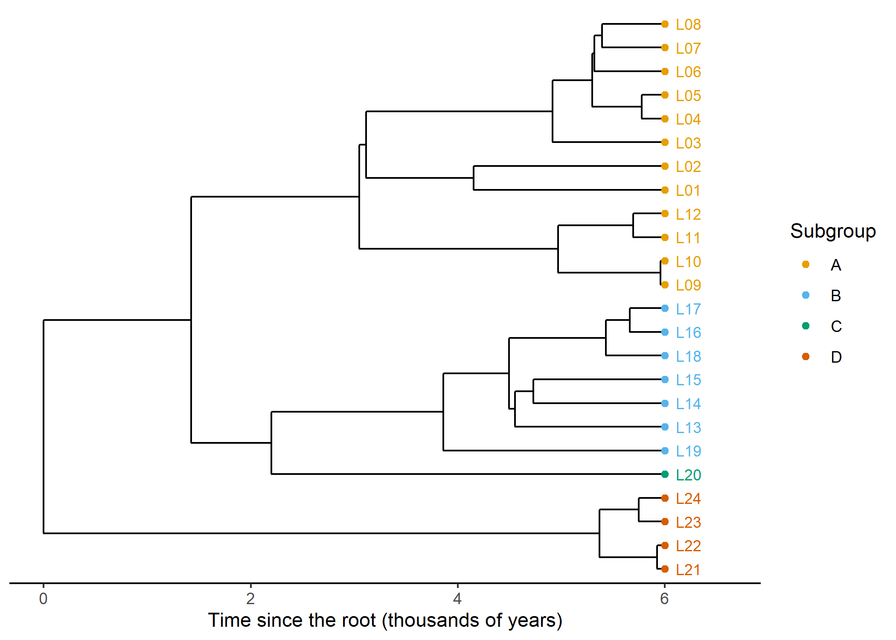
Figure 17.1: The simulated true tree of 24 languages, with a time depth of 6,000 years. Tip labels are colored by subgroup, that is, by the lineage alive 3,000 years before the present from which each language descends.
17.3.2 Lexical replacement
Next we let vocabulary evolve along the tree. Our model is the simplest one that still captures the essentials of lexical change in a basic vocabulary list. Each of \(M\) meanings (concepts such as ‘hand’, ‘water’ or ‘two’) is expressed in the root language by a single word, which founds cognate class 1 for that meaning. Along each branch, the word for meaning \(m\) is replaced by a new, unrelated word at rate \(r_m\) per millennium. Replacements occur as a Poisson process, so the probability that the word survives a branch of length \(t\) unchanged is \[\begin{equation} P(\text{no replacement on a branch of length } t) = e^{-r_m t}. \tag{17.1} \end{equation}\] This is precisely the assumption of glottochronology (Swadesh 1955; Lees 1953), applied separately to each meaning and each branch. Every replacement creates a cognate class that has never existed before, so a class can be born only once and, once lost, never comes back. In the terms of Chapter 7, cognate classes evolve under a perfectly Dollo-like process with no homoplasy.
Real meanings differ greatly in their rates of replacement. Words for ‘two’, ‘who’ or ‘I’ are replaced far more slowly than words for ‘dirty’ or ‘to throw’, and frequency of use is a good predictor of the difference (Pagel et al. 2007). We capture this by drawing the rate of each meaning from a gamma distribution with mean \(\bar r\) and shape \(\alpha\), \[\begin{equation} r_m \sim \mathrm{Gamma}(\alpha,\ \alpha / \bar r), \qquad \mathbb{E}[r_m] = \bar r, \quad \mathrm{Var}[r_m] = \bar r^2 / \alpha. \tag{17.2} \end{equation}\] With \(\alpha = 1\) the rates are exponentially distributed, so a few meanings change very fast and many change slowly. We set the mean rate to \(\bar r = 0.1\) replacements per meaning per millennium. Over a 6,000-year tree this produces a realistic mix of very stable and very unstable meanings. Finally, each language-meaning cell is deleted with a small probability, to mimic the missing data that are ubiquitous in real word lists.
simulate_cognates <- function(tree, n_meanings = 110, mean_rate = 0.1,
gamma_shape = 1, p_missing = 0.03) {
tree <- reorder(tree, "cladewise") # parents are visited before children
n_tip <- Ntip(tree)
rates <- rgamma(n_meanings, shape = gamma_shape,
rate = gamma_shape / mean_rate)
states <- matrix(NA_integer_, n_tip + tree$Nnode, n_meanings)
states[n_tip + 1, ] <- 1L # the root has class 1 for every meaning
last_id <- rep(1L, n_meanings) # highest class number used so far
for (i in seq_len(nrow(tree$edge))) {
parent <- tree$edge[i, 1]
child <- tree$edge[i, 2]
s <- states[parent, ]
k <- rpois(n_meanings, rates * tree$edge.length[i]) # replacements
hit <- k > 0
last_id[hit] <- last_id[hit] + k[hit] # only the last replacement survives
s[hit] <- last_id[hit]
states[child, ] <- s
}
tips <- states[seq_len(n_tip), , drop = FALSE]
concepts <- sprintf("C%03d", seq_len(n_meanings))
cog <- data.frame(
Language_ID = rep(tree$tip.label, times = n_meanings),
Parameter_ID = rep(concepts, each = n_tip),
Cognateset_ID = paste0(rep(concepts, each = n_tip), "-", as.vector(tips))
)
keep <- runif(nrow(cog)) > p_missing # random missing data
list(cognates = cog[keep, ], rates = setNames(rates, concepts))
}
sim <- simulate_cognates(true_tree)
cog <- sim$cognates
head(cog, 8)#> Language_ID Parameter_ID Cognateset_ID
#> 1 L01 C001 C001-2
#> 2 L02 C001 C001-1
#> 3 L03 C001 C001-1
#> 4 L04 C001 C001-1
#> 5 L05 C001 C001-1
#> 6 L06 C001 C001-1
#> 7 L07 C001 C001-1
#> 8 L08 C001 C001-1The output is a long table with one row per word: a language, a meaning (Parameter_ID) and the cognate class to which the word belongs (Cognateset_ID). We have deliberately used the column names of the CLDF standard (Forkel et al. 2018), in which a Lexibank dataset stores its words in a FormTable and its cognate judgments in a CognateTable (Section 17.13). Code written for this toy table therefore works, almost unchanged, on real data.
n_classes <- tapply(cog$Cognateset_ID, cog$Parameter_ID,
function(x) length(unique(x)))
summary(as.vector(n_classes))#> Min. 1st Qu. Median Mean 3rd Qu. Max.
#> 1.00 2.00 3.00 4.04 5.00 15.00Each meaning is now represented by between 1 and 15 cognate classes across the family. Meanings with a single class are those whose word was never replaced anywhere on the tree; meanings with many classes are the fast-evolving ones.
Our simulator leaves out most of what makes real lexical data difficult. There is no borrowing, so every shared cognate reflects common descent. There are no synonyms, so each language has exactly one word per meaning. There is no semantic shift that brings an old cognate class into a new meaning, no parallel innovation, no partial cognacy, and no coding error. Real data violate all of these assumptions (Chapters 3, 8 and 15). The results below are therefore a best case. It is good practice to rerun a pipeline on simulated data that do include these complications, and to see which conclusions survive.
17.4 Step 2: From cognate table to character matrix
Phylogenetic programs need a matrix of languages by characters. As discussed in Chapter 3, the dominant coding in lexical phylogenetics is binary presence/absence coding. Each cognate class becomes a character, scored 1 in the languages that have a word belonging to the class for the relevant meaning, and 0 in the languages whose word for that meaning belongs to some other class. If a language has no recorded word for the meaning at all, every character belonging to that meaning is scored as missing (?), not as absent. Getting this last point right matters: scoring an unrecorded meaning as 0 would assert that the language lacks the cognate, and would make poorly documented languages look artificially divergent.
cognates_to_binary <- function(cog) {
langs <- sort(unique(cog$Language_ID))
sets <- sort(unique(cog$Cognateset_ID))
set_concept <- cog$Parameter_ID[match(sets, cog$Cognateset_ID)]
m <- matrix("0", length(langs), length(sets), dimnames = list(langs, sets))
m[cbind(match(cog$Language_ID, langs), match(cog$Cognateset_ID, sets))] <- "1"
attested <- table(factor(cog$Language_ID, levels = langs),
factor(cog$Parameter_ID, levels = unique(set_concept)))
for (cc in colnames(attested)) { # unattested meaning -> all '?'
absent <- attested[, cc] == 0
if (any(absent)) m[absent, set_concept == cc] <- "?"
}
attr(m, "concept") <- set_concept
m
}
bin <- cognates_to_binary(cog)
dim(bin)#> [1] 24 444#> bin
#> ? 0 1
#> 306 7793 2557The matrix has 24 languages and 444 binary characters, and about 3% of its cells are missing. Because the function uses only the three columns Language_ID, Parameter_ID and Cognateset_ID, it handles synonyms (two cognate sets for the same language and meaning) without modification: both characters are simply scored 1. It does assume that cognate set identifiers are unique across meanings; in real data it is safest to paste the meaning identifier onto the cognate set identifier, as our simulator does.
It is worth looking at how the characters are distributed across the family, because the distribution determines what a phylogenetic method can learn from them.
n_present <- colSums(bin == "1")
table(cut(n_present, breaks = c(0, 1, 2, 5, 10, n_lang - 1, n_lang),
labels = c("1 (singleton)", "2", "3-5", "6-10",
paste0("11-", n_lang - 1), paste0(n_lang, " (all)"))))#>
#> 1 (singleton) 2 3-5 6-10 11-23
#> 173 48 95 40 79
#> 24 (all)
#> 9About 39% of the characters are singletons, present in a single language. Singletons tell us nothing about the branching order, since they do not group any languages together, but they are informative about branch lengths: a language with many singletons has replaced much of its vocabulary since it split from its relatives. A handful of characters are present in every language; these belong to meanings whose word was never replaced.
Notice what is never observed: a character that is absent from every language. A cognate class that has disappeared from every sampled language leaves no trace and cannot be coded. This is the ascertainment bias discussed in Chapter 7. It is the reason MrBayes and RevBayes offer a noabsencesites coding option and BEAST 2 analyses of cognate data include an ascertainment correction (Lewis 2001; Nicholls and Gray 2008). We return to it in Step 6.
Figure 17.2 displays the whole matrix, with languages ordered as on the true tree and characters grouped by meaning. Closely related languages share long runs of identical columns.
tip_order <- true_tree$tip.label[
true_tree$edge[true_tree$edge[, 2] <= n_lang, 2]]
num <- matrix(match(bin[tip_order, ], c("0", "1", "?")), nrow = n_lang,
dimnames = list(tip_order, colnames(bin)))
op <- par(mar = c(2, 4, 1, 1))
image(t(num[n_lang:1, ]), col = c("grey92", "grey20", "#D55E00"),
axes = FALSE, useRaster = TRUE)
axis(2, at = seq(0, 1, length.out = n_lang), labels = rev(tip_order),
las = 1, cex.axis = 0.6, tick = FALSE)
mtext("cognate classes (grouped by meaning)", side = 1, line = 0.5, cex = 0.8)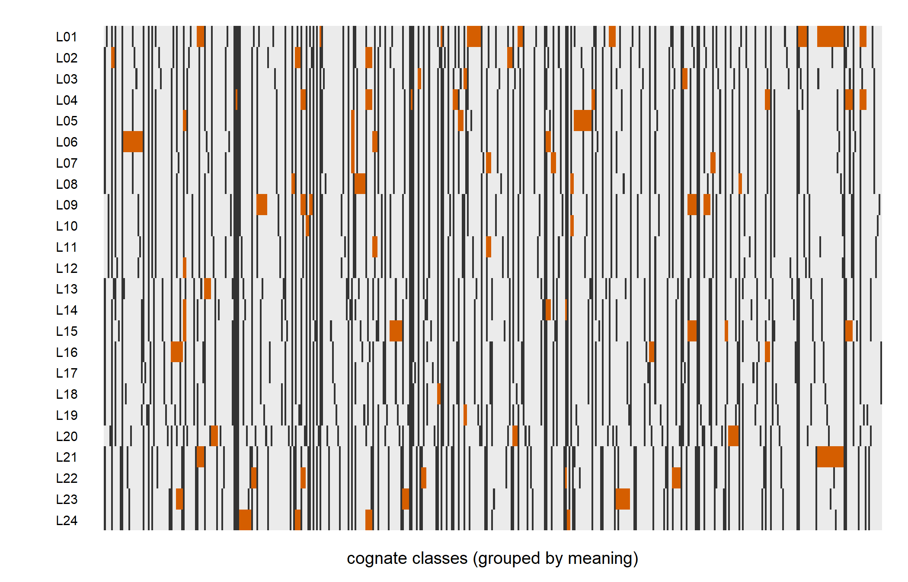
Figure 17.2: The binary cognate matrix. Rows are languages, ordered as in the true tree; columns are cognate classes, grouped by meaning. Dark cells are presences, light cells absences and orange cells missing data.
Finally, we convert the character matrix into a phyDat object, the data format used by phangorn. We declare a user-defined alphabet with the two states 0 and 1, and tell phangorn that ? means “either state”.
#> 24 sequences with 444 character and 299 different site patterns.
#> The states are 0 1phangorn compresses identical columns into site patterns, which is why it reports fewer patterns than characters. All the likelihood calculations below are done once per pattern and weighted by the number of times each pattern occurs.
17.5 Step 3: Exploring the data
Before inferring a tree it is wise to look at the data in ways that do not presuppose one. The most natural summary for lexical data is the lexicostatistical distance between two languages: the proportion of meanings, among those recorded for both, for which they do not share a cognate. If \(S_{ij}\) is the number of meanings for which languages \(i\) and \(j\) share a cognate and \(N_{ij}\) the number of meanings recorded for both, \[\begin{equation} d_{ij} = 1 - \frac{S_{ij}}{N_{ij}}. \tag{17.3} \end{equation}\] This is the quantity that classical lexicostatistics computed by hand (Chapter 1). It is computed directly from the long cognate table.
lexical_distance <- function(cog) {
langs <- sort(unique(cog$Language_ID))
n <- length(langs)
D <- matrix(0, n, n, dimnames = list(langs, langs))
by_lang <- split(cog, cog$Language_ID)
for (i in seq_len(n - 1)) for (j in (i + 1):n) {
a <- by_lang[[langs[i]]]
b <- by_lang[[langs[j]]]
common <- intersect(a$Parameter_ID, b$Parameter_ID)
shared <- intersect(a$Cognateset_ID[a$Parameter_ID %in% common],
b$Cognateset_ID[b$Parameter_ID %in% common])
n_shared_meanings <- length(unique(sub("-[0-9]+$", "", shared)))
D[i, j] <- D[j, i] <- 1 - n_shared_meanings / length(common)
}
as.dist(D)
}
D_lex <- lexical_distance(cog)
summary(as.vector(D_lex))#> Min. 1st Qu. Median Mean 3rd Qu. Max.
#> 0.00971 0.31719 0.47573 0.42855 0.56636 0.64583The closest pair of languages differ in about 1% of their recorded meanings, the most distant pair in about 65%. Under the glottochronological model of Equation (17.1) with a single rate \(r\), the expected distance between two languages separated by a total path length \(T\) would be \(1 - e^{-rT}\), a curve that flattens as \(T\) grows. With rates varying among meanings it flattens even more, because the fast meanings are quickly saturated while the slow ones are still informative. This is one reason why converting lexicostatistical distances directly into dates is unreliable (Chapter 9).
How tree-like are these distances? Chapter 8 introduced two diagnostics. The delta score of Holland et al. (2002) measures how far each quartet of languages departs from a perfect tree and averages over quartets. Values near 0 indicate tree-like data, and Gray et al. (2010) found considerably higher values in some language datasets than in others. A NeighborNet (Bryant and Moulton 2004) displays conflicting signal as boxes in a split network. Both are available in phangorn.
#> mean sd
#> 0.128 0.199nnet <- neighborNet(D_lex)
op <- par(mar = rep(1.5, 4), xpd = NA)
pn <- plot(nnet, type = "2D", show.tip.label = FALSE, edge.width = 1)
net_labels(pn, nnet$tip.label, # label placement: see the appendix
col = sg_cols[subgroup[nnet$tip.label]])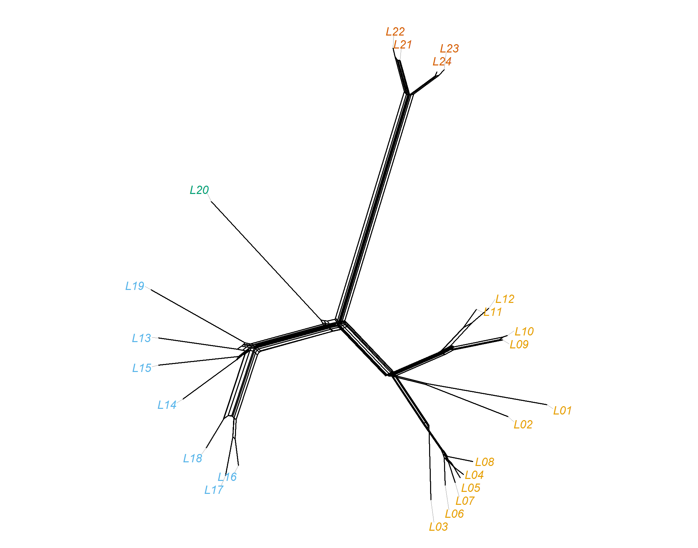
Figure 17.3: NeighborNet of the lexicostatistical distances, with tips colored by subgroup. Because there is no borrowing in the simulation, conflicting signal is weak and the network is close to a tree.
The mean delta score is low and the network in Figure 17.3 has only small boxes, as expected for data simulated without borrowing. The residual conflict comes from short internal branches on which few or no replacements occurred, and from the random noise of a finite word list. In real data, a language that sits at the center of large boxes in a NeighborNet, or that takes part in an unusually large share of the non-tree-like quartets (the arg = "all" option returns the score of every quartet, which can be averaged per language), is a candidate for extensive borrowing or coding problems and deserves a closer look before tree inference.
The figures of this chapter use two small plotting helpers: net_labels(), which places tip labels around a split network without overlaps, and support_layers(), which places support values next to the nodes of a ggtree plot. They are defined in hidden chunks, and their code is printed in Section E.3.1.
17.6 Step 4: Distance trees
The quickest route from a distance matrix to a tree is a clustering algorithm (Chapter 4). UPGMA repeatedly joins the two closest clusters and assumes that distances are ultrametric, that is, that every language has changed at the same rate since the root. Neighbor-joining (Saitou and Nei 1987) relaxes this assumption and produces an unrooted tree with branch lengths that may differ among lineages. We compute both from the lexicostatistical distances, and also a neighbor-joining tree from the Hamming distances between rows of the binary matrix, the proportion of cognate characters (rather than meanings) in which two languages differ.
To judge these trees we need a measure of distance from the truth. The Robinson-Foulds (RF) distance (Robinson and Foulds 1981) counts the bipartitions (splits) found in one tree but not the other (Chapter 2). For two fully resolved unrooted trees with \(n\) tips, each has \(n-3\) nontrivial splits, so the RF distance ranges from 0 to \(2(n-3)\), and dividing by this maximum gives a normalized distance between 0 (identical topologies) and 1 (no split in common):
\[\begin{equation}
\mathrm{RF}_{\text{norm}}(\tau_1, \tau_2) = \frac{|\Sigma(\tau_1) \,\triangle\, \Sigma(\tau_2)|}{2(n-3)},
\tag{17.4}
\end{equation}\]
where \(\Sigma(\tau)\) is the set of nontrivial splits of tree \(\tau\) and \(\triangle\) denotes the symmetric difference. We also count how many of the true subgroups with more than one member are recovered as clades. Since several of the methods produce unrooted trees, we ask whether each subgroup forms a clade under some rooting, which is what ape::is.monophyletic() checks for an unrooted tree.
truth_unrooted <- unroot(true_tree)
multi_groups <- names(which(table(subgroup) > 1))
score_tree <- function(tree) {
rf <- RF.dist(unroot(tree), truth_unrooted, normalize = TRUE)
groups_ok <- vapply(multi_groups, function(g)
is.monophyletic(tree, names(subgroup)[subgroup == g]), logical(1))
c(RF_normalized = round(rf, 3),
subgroups_recovered = sum(groups_ok), subgroups_total = length(groups_ok))
}
rbind(UPGMA = score_tree(tree_upgma),
`NJ (lexical)` = score_tree(tree_nj),
`NJ (Hamming)` = score_tree(tree_nj_ham))#> RF_normalized subgroups_recovered subgroups_total
#> UPGMA 0.143 3 3
#> NJ (lexical) 0.238 3 3
#> NJ (Hamming) 0.238 3 3On these data the distance methods already recover most of the true tree, including its subgroups. This is not surprising: the data were generated under a clock-like process with no borrowing, which is exactly the setting in which UPGMA’s assumptions hold. With real data, where some lineages change faster than others, UPGMA can be badly misled, and NJ is generally preferred among distance methods (Chapter 4). The remaining differences from the truth lie on the short internal branches, where few replacements happened and the data carry little information either way.
17.7 Step 5: Maximum parsimony
Parsimony seeks the tree that requires the fewest changes to explain the data (Chapter 4). phangorn searches tree space with the parsimony ratchet (Nixon 1999), which alternates between searches on the original data and on randomly reweighted data in order to escape local optima. We then assign branch lengths by the ACCTRAN criterion, which places changes as close to the root as possible, and report the tree length together with the consistency index (CI) and retention index (RI), two classical measures of how much homoplasy the data contain on the tree.
tree_mp <- pratchet(cog_data, trace = 0, minit = 50, all = FALSE)
tree_mp <- acctran(tree_mp, cog_data)
c(length = parsimony(tree_mp, cog_data),
CI = round(CI(tree_mp, cog_data), 3), RI = round(RI(tree_mp, cog_data), 3))#> length CI RI
#> 560.000 0.768 0.862#> RF_normalized subgroups_recovered subgroups_total
#> 0.19 3.00 3.00The data were simulated without homoplasy, so why is the CI below 1? The answer lies in the coding. Under binary presence/absence coding, a single replacement event on one branch produces two changes: the old cognate class goes from 1 to 0, and the new class goes from 0 to 1. Moreover, a cognate class that is lost independently in two lineages (because the meaning was replaced separately in each) produces two 1-to-0 changes for the same character, which parsimony counts as homoplasy even though no cognate class was ever born twice. This dependence among the binary characters that encode a single meaning is one of the well-known costs of presence/absence coding (Chapters 7 and 15), and the stochastic Dollo models of Chapter 7 were designed with precisely this situation in mind.
17.8 Step 6: Maximum likelihood
17.8.1 Fitting and comparing models
A likelihood analysis requires an explicit model of character change. For binary cognate characters, the standard choice is a two-state continuous-time Markov chain with rate matrix \[\begin{equation} \mathbf{Q} = \begin{pmatrix} -\pi_1 & \pi_1 \\ \pi_0 & -\pi_0 \end{pmatrix}, \tag{17.5} \end{equation}\] scaled so that the expected number of changes per unit branch length is 1, where \(\pi_0\) and \(\pi_1\) are the stationary frequencies of absence and presence. If \(\pi_0 = \pi_1 = 1/2\) the model is the binary analogue of the Jukes-Cantor model, sometimes called the Mk model with \(k=2\) (Lewis 2001). We compare three models: equal frequencies; estimated frequencies; and estimated frequencies with gamma-distributed rate variation among characters, using four discrete rate categories. Each model is fitted with an NNI tree search starting from the NJ tree, and the models are compared by AIC (Chapter 5).
ctrl <- pml.control(trace = 0)
fit_start <- pml(tree_nj, cog_data)
fit_mk <- optim.pml(fit_start, optNni = TRUE, control = ctrl)
fit_mkf <- optim.pml(fit_mk, optNni = TRUE, optBf = TRUE, control = ctrl)
fit_mkfg <- optim.pml(update(fit_mkf, k = 4), optNni = TRUE, optBf = TRUE,
optGamma = TRUE, control = ctrl)
model_table <- data.frame(
model = c("equal frequencies", "estimated frequencies",
"estimated frequencies + gamma"),
logLik = sapply(list(fit_mk, fit_mkf, fit_mkfg), logLik),
df = sapply(list(fit_mk, fit_mkf, fit_mkfg),
function(f) attr(logLik(f), "df")))
model_table$AIC <- -2 * model_table$logLik + 2 * model_table$df
model_table$dAIC <- model_table$AIC - min(model_table$AIC)
model_table$logLik <- round(model_table$logLik, 1)
model_table$AIC <- round(model_table$AIC, 1)
model_table$dAIC <- round(model_table$dAIC, 1)
knitr::kable(model_table, caption = paste(
"Comparison of binary substitution models by AIC.",
"The degrees of freedom include the branch lengths."))| model | logLik | df | AIC | dAIC |
|---|---|---|---|---|
| equal frequencies | -2552 | 45 | 5195 | 198.6 |
| estimated frequencies | -2452 | 46 | 4996 | 0.0 |
| estimated frequencies + gamma | -2453 | 47 | 5000 | 3.3 |
best_fit <- fit_mkf
round(c(pi_absent = fit_mkfg$bf[1], pi_present = fit_mkfg$bf[2],
gamma_shape = fit_mkfg$shape), 3)#> pi_absent pi_present gamma_shape
#> 0.753 0.247 99.999#> RF_normalized subgroups_recovered subgroups_total
#> 0.238 3.000 3.000Estimating the stationary frequencies improves the fit enormously, as Table 17.2 shows. This makes sense: in a presence/absence matrix most cells are 0, because each language has only one of the several cognate classes for each meaning, and a model that assumes equal frequencies of 0 and 1 is badly misspecified. The estimated frequency of presence, about 0.25, is close to the overall proportion of 1s among the non-missing cells.
Adding gamma rate variation, by contrast, does not improve the fit enough to justify the extra parameter, and the gamma shape parameter is estimated to be very large (100, close to the upper bound of the optimizer). A large shape parameter means that the binary characters show little rate variation, even though we simulated strong rate variation among meanings. The reason is again the coding. A fast meaning does not produce a few fast-changing characters; it produces many cognate classes, each of which is born once and then lost, so each individual character changes only once or twice on the tree. Rate variation among meanings is thus partly converted into variation in the number of characters per meaning rather than into variation in rates among characters. Models that work at the level of meanings, such as multistate models or binary models with meaning-level partitions, address this mismatch (Chapter 7). In what follows we use the model preferred by AIC, the binary model with estimated frequencies and no rate variation, as our best-fitting model. With real cognate data, which are messier than ours, among-character rate variation is usually strongly supported.
17.8.2 Ascertainment correction
The likelihoods above treat the observed characters as if they were a random sample of all possible characters, but, as noted in Step 2, a cognate class absent from every language can never be observed. phangorn implements the Lewis correction for unobservable constant characters through the argument ASC = TRUE (Lewis 2001). This corrects for the absence of both all-0 and all-1 columns, so to use it consistently we must first remove the few characters that are present in every language. Because optim.pml() in phangorn 2.12.1 did not reliably optimize branch lengths under ASC = TRUE in our tests, we use it only for the topology search and then re-optimize the branch lengths with refine_asc_edges() (Section 7.5). The frequency of presence is held at its estimate from the full matrix; in our trials optBf = TRUE did not reliably update it under the correction either, and a direct joint maximization drove it to about 0.01, close to the stochastic Dollo limit of the reversible model (Section 7.7.4), as one might expect for data in which every cognate class arises only once.
constant <- apply(bin, 2, function(x) all(x[x != "?"] == "1"))
bin_var <- bin[, !constant]
cog_var <- phyDat(bin_var, type = "USER", levels = c("0", "1"), ambiguity = "?")
fit_asc <- optim.pml(pml(best_fit$tree, cog_var, ASC = TRUE, bf = best_fit$bf),
optNni = TRUE, control = ctrl)
fit_asc <- refine_asc_edges(fit_asc) # branch lengths on corrected likelihood
c(constant_removed = sum(constant), logLik = round(logLik(fit_asc), 1))#> constant_removed logLik
#> 14 -2210#> RF_normalized subgroups_recovered subgroups_total
#> 0.238 3.000 3.000This log-likelihood is not comparable with those of Table 17.2, because it is computed on a different dataset. Removing constant characters and correcting for them is the closest phangorn comes to the noabsencesites correction of MrBayes and RevBayes, which conditions only on the absence of all-0 columns. For binary cognate data the latter is the more appropriate correction, since a cognate class present in all languages is perfectly observable. Here the correction leaves the topology unchanged but shortens the tree considerably, from a total length of 1.65 to 0.97 expected changes per character: without it, the model reads the shortage of all-absent characters as evidence of change and inflates the branch lengths. In Bayesian dating analyses this matters directly, because branch lengths become inferred dates. As Chapter 7 explains, the correction can also be applied per meaning, since each meaning necessarily has at least one cognate class present in some language.
17.8.3 Rooting
The binary model of Equation (17.5) is time-reversible, so the likelihood does not depend on where the root is placed, and maximum-likelihood trees are unrooted. To interpret a tree historically we must root it. With real data, the usual options are an outgroup (a language or subgroup believed to have split off first, such as Anatolian for Indo-European or the Formosan languages for Austronesian, both of which are themselves debated choices), midpoint rooting, which places the root halfway along the longest path between two tips and assumes a roughly clock-like process, or a clock model that estimates the root jointly with the tree (Chapter 9). Here we use midpoint rooting, which works well because the data were simulated under a strict clock.
17.9 Step 7: Bootstrap support and comparison with the truth
The nonparametric bootstrap (Felsenstein 1985a) resamples characters with replacement to create pseudo-replicate datasets of the same size, re-estimates the tree from each, and reports for each clade of the best tree the proportion of replicate trees that contain it. We use 50 replicates, enough for illustration; published analyses typically use 100 to 1,000. Each replicate repeats the NNI search under the best-fitting model.
bs_trees <- bootstrap.pml(best_fit, bs = 50, optNni = TRUE, control = ctrl)
ml_tree <- plotBS(midpoint(best_fit$tree), bs_trees, type = "none", p = 0)
bs_support <- as.numeric(ml_tree$node.label)
if (max(bs_support, na.rm = TRUE) <= 1) bs_support <- 100 * bs_support
bs_support[1] <- NA # the root has no meaningful support
ml_tree$node.label <- ifelse(is.na(bs_support), "", round(bs_support))
summary(bs_support)#> Min. 1st Qu. Median Mean 3rd Qu. Max. NAs
#> 20 53 92 79 100 100 1Half of the internal nodes have support of at least 92%, and 10 of the 22 nodes with a support value reach 95% or more.
Bootstrapping characters in a cognate matrix raises a subtle issue. The binary characters belonging to one meaning are not independent, so resampling them individually breaks up meanings and can overstate support. A more faithful scheme resamples whole meanings, with all their characters, which is straightforward to implement by resampling the Parameter_ID values of the long table and rebuilding the matrix. We leave this as an exercise; the code in Step 2 does all the work.
Figure 17.4 shows the midpoint-rooted ML tree with bootstrap support at the internal nodes and tips colored by their true subgroup.
p_ml <- ggtree(ml_tree) %<+% tip_info +
geom_tippoint(aes(color = subgroup), size = 1.6) +
geom_tiplab(aes(color = subgroup), size = 3, offset = 0.004,
show.legend = FALSE) +
support_layers(2.6) + # support labels: see the appendix
scale_color_manual(values = sg_cols, name = "Subgroup") +
theme_tree2() + labs(x = "Expected changes per character")
p_ml + xlim(0, max(node.depth.edgelength(ml_tree)) * 1.15)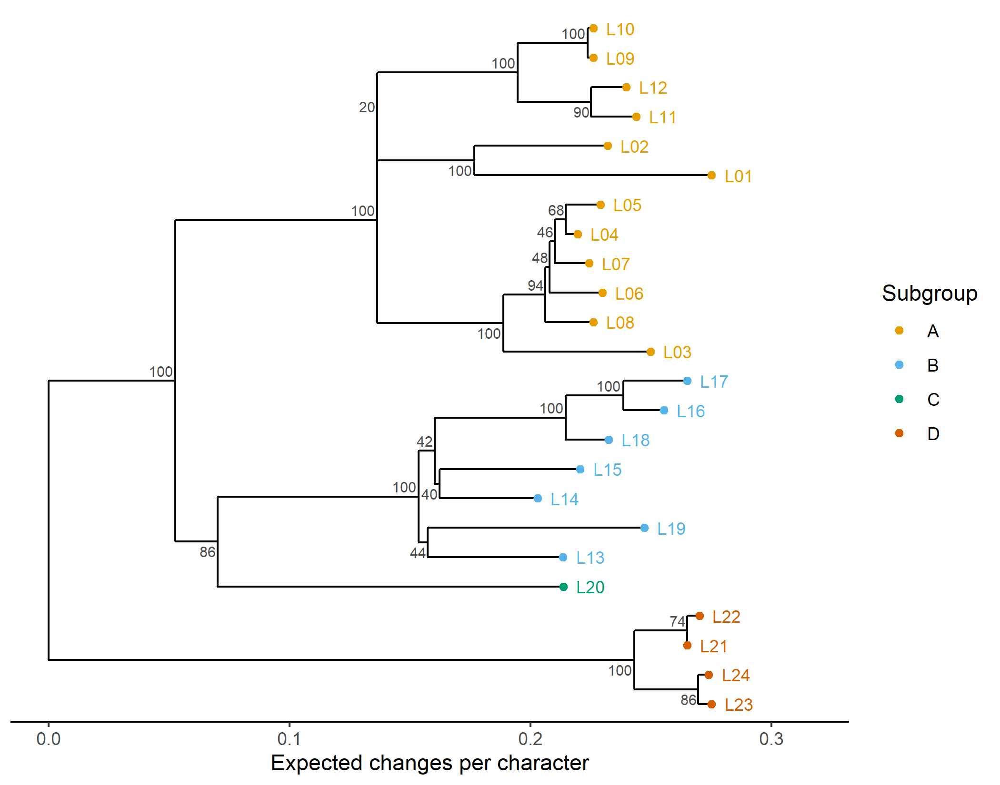
Figure 17.4: Maximum-likelihood tree (binary model with estimated frequencies), midpoint-rooted, with bootstrap support values (percent of 50 replicates). Tip colors show the true subgroups. Branch lengths are in expected changes per character.
We can now compare all the estimates with the true tree (Table 17.3).
comparison <- rbind(
UPGMA = score_tree(tree_upgma),
`NJ (lexical distance)` = score_tree(tree_nj),
`NJ (Hamming distance)` = score_tree(tree_nj_ham),
`Maximum parsimony` = score_tree(tree_mp),
`ML, equal frequencies` = score_tree(fit_mk$tree),
`ML, estimated frequencies` = score_tree(fit_mkf$tree),
`ML, frequencies + gamma` = score_tree(fit_mkfg$tree),
`ML, ascertainment-corrected` = score_tree(fit_asc$tree))
knitr::kable(comparison, caption = paste(
"Normalized Robinson-Foulds distances between each estimated tree and",
"the true tree (0 = identical), and the number of true multi-language",
"subgroups recovered as clades."))| RF_normalized | subgroups_recovered | subgroups_total | |
|---|---|---|---|
| UPGMA | 0.143 | 3 | 3 |
| NJ (lexical distance) | 0.238 | 3 | 3 |
| NJ (Hamming distance) | 0.238 | 3 | 3 |
| Maximum parsimony | 0.190 | 3 | 3 |
| ML, equal frequencies | 0.238 | 3 | 3 |
| ML, estimated frequencies | 0.238 | 3 | 3 |
| ML, frequencies + gamma | 0.238 | 3 | 3 |
| ML, ascertainment-corrected | 0.238 | 3 | 3 |
Two lessons from Table 17.3 generalize well beyond this toy example. First, when the data are clean and the process is close to clock-like, all methods do reasonably well and differ mainly in how they resolve the shortest internal branches. Second, the differences that remain are concentrated precisely on those branches, which are also the ones with low bootstrap support. The bootstrap is doing its job: low support flags the parts of the tree where the data are not decisive, and where different methods are free to disagree. Do not be surprised if a more sophisticated model does not win on any particular simulated dataset. The truth is a single random draw, and with only a few hundred characters the sampling error of any method is substantial. Meaningful comparisons of methods require many replicate simulations, as in the studies of Barbançon et al. (2013) and Rama et al. (2018). And all of these comparisons are parameter recovery on data that fit the methods’ assumptions closely. A method that wins here has passed the easiest test, not shown that it fits real cognate data.
A tanglegram (Figure 17.5) is the most direct visual comparison of two trees: the true tree is drawn on the left, the ML tree on the right, and lines connect the same language in both. phytools rotates nodes to minimize line crossings.
#> Rotating nodes to optimize matching...
#> Done.plot(co, fsize = 0.65, link.type = "curved", link.lwd = 1.2,
link.col = adjustcolor("#0072B2", 0.6))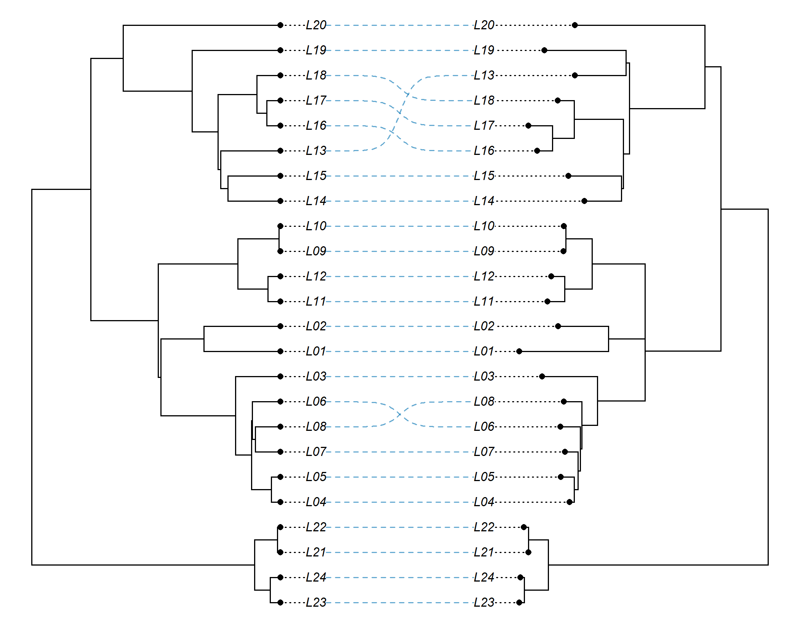
Figure 17.5: Tanglegram of the true tree (left) and the midpoint-rooted ML tree (right). Crossing lines indicate topological differences.
Barbançon et al. (2013) carried out what remains one of the most careful simulation comparisons of phylogenetic methods for linguistic data. They simulated lexical and morphological characters on model trees, with up to three contact edges, under a range of conditions, including different degrees of deviation from a lexical clock, rate variation among characters, homoplasy and borrowing. They then compared the accuracy of six methods: UPGMA, neighbor-joining, maximum parsimony, weighted maximum parsimony, weighted maximum compatibility and the Bayesian method of Gray and Atkinson, run in MrBayes. Among their findings was that UPGMA, the method closest to classical lexicostatistics, was the least accurate, and that its error grew the most as the clock assumption was relaxed. The ranking of the unweighted methods (maximum parsimony first, then Gray and Atkinson’s method, then neighbor-joining) was remarkably consistent across conditions, whereas the performance of the weighted methods depended on the weighting scheme and the amount of homoplasy. The study is a model for how to evaluate a pipeline: simulate under conditions that match what is known about real language change, vary those conditions systematically, and measure accuracy against the known truth.
17.10 Step 8: Exporting data for Bayesian software
Bayesian dating analyses with relaxed clocks, calibrations and stochastic Dollo or covarion models are rarely run in R. They are run in dedicated programs: MrBayes (Ronquist, Teslenko, et al. 2012), BEAST 2 (Bouckaert et al. 2014, 2019), RevBayes (Höhna et al. 2016) or TraitLab (Nicholls and Gray 2008), often with BEASTling (Maurits et al. 2017) to write the BEAST 2 input file. R is nevertheless the natural place to prepare their inputs, because the matrix, the language metadata and the calibrations already live there. In this section we write the files these programs need into a temporary directory. The external programs are not part of the book’s build. We ran each of them on exactly these files, with shorter chains than a real analysis would use, and kept the input files, a thinned copy of the output, the scripts and the run logs in the folder software-runs/ of the book’s repository. Its file run_all.sh repeats every run, and its README.md lists the program versions, run times and diagnostics. Appendix F lists where to obtain the programs.
17.10.1 NEXUS
NEXUS (Chapter 2) is the lingua franca of phylogenetic software. A NEXUS data block declares the number of taxa and characters, the data type and the symbols for missing data, followed by the matrix. Two data types are relevant for cognate data. MrBayes uses DATATYPE=RESTRICTION for binary characters, which enables its ascertainment options; most other programs read DATATYPE=STANDARD with symbols 01. It is also useful to record which characters belong to which meaning, as character sets (CHARSET), so that analyses can be partitioned by meaning or apply ascertainment correction per meaning. The following function writes both.
write_nexus_binary <- function(m, file, datatype = c("restriction", "standard"),
extra = NULL) {
datatype <- match.arg(datatype)
fmt <- if (datatype == "restriction") {
"FORMAT DATATYPE=RESTRICTION MISSING=? GAP=-;"
} else {
"FORMAT DATATYPE=STANDARD SYMBOLS=\"01\" MISSING=? GAP=-;"
}
w <- max(nchar(rownames(m)))
rows <- sprintf(" %-*s %s", w, rownames(m),
apply(m, 1, paste, collapse = ""))
concept <- attr(m, "concept")
r <- rle(concept)
ends <- cumsum(r$lengths)
starts <- ends - r$lengths + 1
# spaces around '-': RevBayes's NEXUS reader rejects "1-4"
charsets <- sprintf(" CHARSET %s = %d - %d;", r$values, starts, ends)
lines <- c("#NEXUS", "",
"BEGIN DATA;",
sprintf(" DIMENSIONS NTAX=%d NCHAR=%d;", nrow(m), ncol(m)),
paste0(" ", fmt),
" MATRIX", rows, " ;", "END;", "",
"BEGIN ASSUMPTIONS;", charsets, "END;")
if (!is.null(extra)) lines <- c(lines, "", extra)
writeLines(lines, file)
invisible(file)
}
nexus_std <- file.path(out_dir, "toy_cognates_standard.nex")
write_nexus_binary(bin, nexus_std, datatype = "standard")
show_file <- function(file, n = 12, width = 72) {
x <- readLines(file, n = n)
x <- ifelse(nchar(x) > width, paste0(substr(x, 1, width), " ..."), x)
cat(x, sep = "\n")
}
show_file(nexus_std)#> #NEXUS
#>
#> BEGIN DATA;
#> DIMENSIONS NTAX=24 NCHAR=444;
#> FORMAT DATATYPE=STANDARD SYMBOLS="01" MISSING=? GAP=-;
#> MATRIX
#> L01 01001010001000001000001001010100000000010100010001000????100010 ...
#> L02 1000??100010000001000010010100010000000101000100100000100100010 ...
#> L03 100010100010000000100010010100001000001001000101000000100100010 ...
#> L04 100010100010000010000010010101000000001001000101000000100100010 ...
#> L05 100010100010000010000010010101000000001001000??1000000100100010 ...
#> L06 10001010001???????????10010101000000001001000101000000100010010 ...It is always worth reading an exported file back in to check that nothing was lost or garbled on the way.
check <- read.nexus.data(nexus_std)
c(languages = length(check), characters = length(check[[1]]),
identical = all(sapply(names(check), function(l)
all(check[[l]] == bin[l, ]))))#> languages characters identical
#> 24 444 117.10.2 MrBayes
MrBayes reads commands from a mrbayes block appended to the NEXUS file. The block below specifies a binary (restriction-site) model with stationary frequencies estimated under a flat Dirichlet prior, gamma rate variation, and the noabsencesites ascertainment correction for the unobservable all-absent characters. It sets up a relaxed clock with independent gamma rates (IGR), a uniform prior on node ages, and one calibration. Since this is a toy, we invent the calibration by pretending that subgroup D is known, from written records, to have begun to diverge within half a millennium of its true age. We generate the block in R, so the language names and the calibration are filled in automatically.
calib_tips <- names(subgroup)[subgroup == "D"]
calib_age <- unname(branching.times(true_tree)[
as.character(getMRCA(true_tree, calib_tips))])
mb_block <- c(
"BEGIN MRBAYES;",
" set autoclose=yes nowarn=yes seed=17 swapseed=17;",
" [ binary model with ascertainment correction and gamma rates ]",
" lset coding=noabsencesites rates=gamma ngammacat=4;",
" prset statefreqpr=dirichlet(1,1);",
" [ relaxed clock; time unit = 1,000 years ]",
" prset brlenspr=clock:uniform clockvarpr=igr;",
" prset clockratepr=lognormal(-2.3,1.0);",
" prset treeagepr=uniform(3,12);",
sprintf(" constraint subgroupD = %s;", paste(calib_tips, collapse = " ")),
sprintf(" calibrate subgroupD = uniform(%.1f,%.1f);",
max(calib_age - 0.5, 0.1), calib_age + 0.5),
" prset topologypr=constraints(subgroupD) nodeagepr=calibrated;",
" mcmc ngen=5000000 samplefreq=1000 printfreq=10000 nchains=4 nruns=2;",
" sump relburnin=yes burninfrac=0.25;",
" sumt relburnin=yes burninfrac=0.25 contype=allcompat;",
"END;")
nexus_mb <- file.path(out_dir, "toy_cognates_mrbayes.nex")
write_nexus_binary(bin, nexus_mb, datatype = "restriction", extra = mb_block)
cat(mb_block, sep = "\n")#> BEGIN MRBAYES;
#> set autoclose=yes nowarn=yes seed=17 swapseed=17;
#> [ binary model with ascertainment correction and gamma rates ]
#> lset coding=noabsencesites rates=gamma ngammacat=4;
#> prset statefreqpr=dirichlet(1,1);
#> [ relaxed clock; time unit = 1,000 years ]
#> prset brlenspr=clock:uniform clockvarpr=igr;
#> prset clockratepr=lognormal(-2.3,1.0);
#> prset treeagepr=uniform(3,12);
#> constraint subgroupD = L21 L22 L23 L24;
#> calibrate subgroupD = uniform(0.1,1.1);
#> prset topologypr=constraints(subgroupD) nodeagepr=calibrated;
#> mcmc ngen=5000000 samplefreq=1000 printfreq=10000 nchains=4 nruns=2;
#> sump relburnin=yes burninfrac=0.25;
#> sumt relburnin=yes burninfrac=0.25 contype=allcompat;
#> END;Running mb toy_cognates_mrbayes.nex would perform two independent runs of four Metropolis-coupled chains each (Chapter 6), report the average standard deviation of split frequencies between the runs as a convergence diagnostic, and write the sampled trees to .t files and the parameters to .p files. MrBayes 3.2.9 reads the file as written; it skips the ASSUMPTIONS block, and in batch mode it exits when the block is done. For the book we shortened the run to 1 million generations with two chains per run (mcmc ngen=1000000 samplefreq=500 nchains=2 nruns=2), which took 6 to 11 minutes on one core, depending on the load of the machine. The average standard deviation of split frequencies fell to 0.006, and every PSRF was below 1.12. But the effective sample sizes of the tree height, the clock rate and the state frequencies were only 20 to 40. These parameters are strongly correlated with each other and mix slowly, which is why a real analysis needs the longer run of the block above. The priors here are placeholders. In a real analysis each would need to be justified, and the analysis rerun under alternatives to check that the conclusions do not depend on them (Chapter 15). Note in particular that constraining subgroup D to be monophyletic is a strong assumption that is only justified if the subgroup is securely established by the comparative method.
17.10.3 BEAST 2
BEAST 2 reads a single XML file that describes the data, the model, the priors, the MCMC operators and the output. The file is normally generated with the graphical program BEAUti or, for linguistic data, with BEASTling, rather than written by hand. Writing it from scratch is error-prone, because a typical file for a relaxed-clock covarion analysis runs to many hundreds of lines. It is nevertheless useful to know its structure, and to be able to generate the data part from R. Each language becomes a sequence element whose value attribute is that language’s row of the matrix. For the ascertainment correction, we put a dummy all-absent column in front of the matrix and mark it with the alignment’s ascertained, excludefrom and excludeto attributes. BEAST 2 then leaves column 0 out of the likelihood and conditions on characters not being absent from every language, the equivalent of noabsencesites in MrBayes.
seq_lines <- sprintf(
' <sequence id="seq_%s" taxon="%s" totalcount="2" value="0%s"/>',
rownames(bin), rownames(bin), apply(bin, 1, paste, collapse = ""))
beast_data <- c(paste('<data id="cognates" spec="Alignment" dataType="binary"',
'ascertained="true" excludefrom="0" excludeto="1">'),
seq_lines, "</data>")
writeLines(beast_data, file.path(out_dir, "toy_cognates_beast_data.xml"))
cat(substr(beast_data[1:4], 1, 72), " ...", sep = "\n")#> <data id="cognates" spec="Alignment" dataType="binary" ascertained="true
#> <sequence id="seq_L01" taxon="L01" totalcount="2" value="00100101000
#> <sequence id="seq_L02" taxon="L02" totalcount="2" value="01000??1000
#> <sequence id="seq_L03" taxon="L03" totalcount="2" value="01000101000
#> ...The rest of a BEAST 2.7 file for these data specifies the restriction-site model with estimated frequencies and gamma rate variation, a strict clock, a Yule tree prior, the subgroup-D calibration and the root-age prior of the MrBayes block. The skeleton below shows how the file is organized. It has four parts: the state (everything the MCMC samples: the tree, the birth rate, the clock rate, the gamma shape and the frequencies); the posterior, the product of the priors and the likelihood; the operators, which propose new values for each part of the state; and the loggers, which write the parameter trace and the sampled trees. The full file, about 140 lines long, is software-runs/beast2/toy_beast.xml in the book’s repository, and it runs as it stands. Class names changed in BEAST 2.7, when the core packages were moved to the beast.base namespace, so XML written for BEAST 2.6 or earlier does not run in 2.7 without editing.
<beast version="2.7" namespace="beast.base.core:beast.base.inference:...">
<data id="cognates" spec="Alignment" dataType="binary" ascertained="true"
excludefrom="0" excludeto="1"> ... </data>
<run id="mcmc" spec="MCMC" chainLength="3000000">
<state id="state"> ... </state> <!-- 1. what is sampled -->
<distribution id="posterior" spec="CompoundDistribution">
<distribution id="prior" ...> ... </distribution> <!-- 2a -->
<distribution id="likelihood" ...> ... </distribution> <!-- 2b -->
</distribution>
<operator ... /> ... <!-- 3. proposals -->
<logger ... > ... </logger> <!-- 4. output files -->
</run>
</beast>A longer annotated excerpt of the BEAST 2.7 file, with the priors, the calibration, the substitution model and the operators written out, is in Section E.3.2.
The strict clock is a StrictClockModel element inside the likelihood. For a relaxed clock it is replaced by an uncorrelated lognormal clock (UCRelaxedClockModel) or by the optimized relaxed clock of the ORC package. For a covarion model, the substitution model becomes BinaryCovarion.
17.10.4 BEASTling
BEASTling (Maurits et al. 2017) was written to spare linguists the work of writing BEAST 2 XML. The user writes a short configuration file in a simple key = value format, and BEASTling generates a complete and internally consistent XML file, including ascertainment correction, rate variation among features, calibrations and monophyly constraints. Language identities can be matched to Glottolog (Hammarström et al. 2024), which allows constraints such as “keep every Glottolog subgroup monophyletic” to be stated in a single line. BEASTling reads long-format data with one row per language and feature, which is exactly what our cognate table is, so we export it with a Value column holding the cognate class.
beastling_data <- data.frame(Language_ID = cog$Language_ID,
Parameter_ID = cog$Parameter_ID,
Value = sub("^C[0-9]+-", "", cog$Cognateset_ID))
write.csv(beastling_data, file.path(out_dir, "toy_cognates_long.csv"),
row.names = FALSE, quote = FALSE)
head(beastling_data, 4)#> Language_ID Parameter_ID Value
#> 1 L01 C001 2
#> 2 L02 C001 1
#> 3 L03 C001 1
#> 4 L04 C001 1A configuration for a covarion analysis with a relaxed clock and one calibration might look as follows. We generate it in R so that the calibrated clade and its age range match the MrBayes block above; BEASTling expects calibration ages in years. Note the uniform() around the age range. A bare range such as 129-1129 would be read as the 95% interval of a normal distribution, not as the bounds of a uniform one. The option names below are those of BEASTling 1.5.1, the most recent release.
beastling_conf <- c(
"[admin]",
"basename = toy_family",
"",
"[MCMC]",
"chainlength = 10000000",
"",
"[model lexicon]",
"model = covarion",
"data = toy_cognates_long.csv",
"rate_variation = True",
"",
"[clock default]",
"type = relaxed",
"",
"[calibration]",
sprintf("%s = uniform(%d, %d)", paste(calib_tips, collapse = ","),
round(1000 * max(calib_age - 0.5, 0.1)),
round(1000 * (calib_age + 0.5))))
writeLines(beastling_conf, file.path(out_dir, "toy_family.conf"))
cat(beastling_conf, sep = "\n")#> [admin]
#> basename = toy_family
#>
#> [MCMC]
#> chainlength = 10000000
#>
#> [model lexicon]
#> model = covarion
#> data = toy_cognates_long.csv
#> rate_variation = True
#>
#> [clock default]
#> type = relaxed
#>
#> [calibration]
#> L21,L22,L23,L24 = uniform(129, 1129)Running beastling toy_family.conf writes toy_family.xml, a 775-line BEAST 2 file with one likelihood per meaning, each with its own ascertainment correction. BEASTling leaves out the meanings that have only one cognate class, since they carry no information. There is a catch. BEASTling has not been updated since version 1.5.1 (2021). It writes XML for BEAST 2.6 and does not run under Python 3.14. BEAST 2.7 cannot read the old class names (it stops with “Class could not be found”), so the file must either be run with BEAST 2.6 or have its class names translated to the 2.7 namespace. We did the latter with a short script, software-runs/beastling/beast26_to_27.py, ran BEASTling 1.5.1 under Python 3.12, and ran the converted file with beast toy_family_beast27.xml in BEAST 2.7.7, which needs the BEASTLabs package for BEASTling’s starting tree. The covarion model with a relaxed clock is much slower than the strict-clock analysis of the previous section, about 14 minutes per million states on one core, and a 500,000-state test run was far from converged (an ESS of 5 for the posterior). A real analysis of this kind needs tens of millions of states.
17.10.5 RevBayes
RevBayes (Höhna et al. 2016) takes a different approach from BEAST 2. The model is written as a script in the Rev language, which specifies a probabilistic graphical model one variable at a time. This makes RevBayes the most flexible of the four programs: any parameter can be given any prior, and new models can be assembled from existing pieces without writing Java or C++. The script below specifies an unrooted analysis of the binary matrix under the Mk model with gamma rate variation, conditioned on variable characters (the Mkv correction of Lewis (2001)), with two independent runs. It follows the structure of the RevBayes tutorials on discrete morphological characters. The excerpt below shows the data and the model; the moves, the monitors and the summary of the tree sample are left out.
# excerpt of toy_cognates.Rev (run with: rb toy_cognates.Rev)
data <- concatenate(readDiscreteCharacterData("toy_cognates_standard.nex"))
...
# tree prior: uniform topology, exponential branch lengths
topology ~ dnUniformTopology(taxa)
br_lens[i] ~ dnExponential(10.0) # in a loop over the branches
phylogeny := treeAssembly(topology, br_lens)
# substitution model: symmetric two-state Mk model with gamma rates
Q <- fnJC(2)
alpha ~ dnExponential(1.0)
site_rates := fnDiscretizeGamma(alpha, alpha, 4)
# likelihood, conditioned on variable characters (Mkv)
seq ~ dnPhyloCTMC(tree = phylogeny, Q = Q, siteRates = site_rates,
type = "Standard", coding = "variable")
seq.clamp(data)
...
mymcmc = mcmc(mymodel, monitors, moves, nruns = 2, combine = "mixed")
mymcmc.run(generations = 10000)The complete script, as it was run, is printed in Section E.3.3.
Two details of the script needed care in RevBayes 1.4.1. Because the NEXUS file defines a CHARSET for each meaning, readDiscreteCharacterData() returns 110 separate matrices, one per meaning, and concatenate() joins them again. The 14 characters present in every language that records the meaning are incompatible with coding = "variable", and RevBayes drops them with a warning. The two runs of 10,000 iterations, each with about 76 moves per iteration, took 8 minutes on one core. After a 25% burn-in, every parameter had an ESS above 200 in each run, and the maximum a posteriori tree differed from the true tree in 4 of its 21 internal splits.
Replacing the symmetric Mk model with an asymmetric binary model, the coding option with an ascertainment scheme suited to presence/absence data, or the unrooted tree prior with a birth-death prior and a relaxed clock, are each changes of a few lines. The RevBayes tutorials on dating, clock models and model comparison show how.
An exported file is only as good as the matrix that went into it, and a Bayesian analysis is only as good as its priors. Three checks are worth making every time. First, re-import the exported file and compare it with the original matrix (as we did for the NEXUS file above). Second, run the analysis once with the data removed (BEAST 2 has a “sample from prior” option; in MrBayes use mcmc data=no; in RevBayes, simply omit the clamp) and inspect the resulting distributions of dates and rates. This prior-only run is part of implementation validation: it shows the prior that the program actually uses, which is not always the one the analyst wrote down. The marginal prior on the root age, after calibrations and tree prior have interacted, can be very different from what was intended (Chapter 10). Third, run at least two independent chains from different starting points and confirm that they agree.
17.11 Step 9: Working with posterior samples of trees
A Bayesian analysis produces not one tree but a sample of thousands of trees from the posterior distribution, together with a trace of every parameter. Summarizing this sample is a task in its own right. We use the output of the complete BEAST 2 analysis of Section 17.10.3: the binary model with ascertainment correction and gamma rate variation, a strict clock, a Yule prior, the subgroup-D calibration and a uniform prior between 3,000 and 12,000 years on the root age. We ran BEAST 2.7.7 twice, with seeds 1 and 2, for 3 million states each, sampling every 2,000 states. Each run took about seven minutes on one processor core. A real analysis would run longer, but here every parameter reached an effective sample size above 500 (see below). The book’s repository keeps the two parameter logs in full and every tenth sampled tree (151 trees per run), so the code below runs offline.
17.11.1 Reading tree files and diagnosing convergence
The first steps are to read the tree files, discard the burn-in (the initial part of the chain, before it reached the region of high posterior probability), and check convergence. BEAST 2 and MrBayes write trees in NEXUS format, which ape::read.nexus() reads, and parameter traces as tab-delimited text. RevBayes writes its trees as a table with one Newick tree per row, which read.tree(text = ...) can parse.
beast_dir <- "software-runs/beast2"
runs <- c("run1", "run2")
read_trees <- function(run) {
trees <- read.nexus(file.path(beast_dir, run, "toy_thinned.trees"))
trees[-seq_len(floor(0.1 * length(trees)))] # discard the first 10%
}
posterior <- do.call(c, lapply(runs, read_trees))
read_log <- function(run) {
trace <- read.table(file.path(beast_dir, run, "toy.log"), header = TRUE,
comment.char = "#")
trace[-seq_len(floor(0.1 * nrow(trace))), ]
}
traces <- lapply(runs, read_log)
pars <- c("posterior", "TreeHeight", "clockRate", "freqParameter.2",
"gammaShape", "mrca.age.subgroupD.")
ess <- sapply(traces, function(tr) coda::effectiveSize(tr[, pars]))
colnames(ess) <- runs
psrf <- coda::gelman.diag(coda::mcmc.list(lapply(traces, function(tr)
coda::mcmc(tr[, pars]))), autoburnin = FALSE)$psrf[, 1]
round(cbind(ess, PSRF = psrf), 2)#> run1 run2 PSRF
#> posterior 1351.0 1351.0 1
#> TreeHeight 1351.0 1475.2 1
#> clockRate 743.2 602.1 1
#> freqParameter.2 516.5 492.0 1
#> gammaShape 1351.0 759.8 1
#> mrca.age.subgroupD. 1332.7 1351.0 1#> trees root_age_median
#> 272.00 3.65Every parameter has an ESS of several hundred in each run. The potential scale reduction factor (PSRF) of Gelman and Rubin (1992) compares the variance within and between the two runs; values close to 1 indicate that they have converged to the same distribution. The posterior median of the root age, about 3,600 years, is well below the true 6,000 years. With a strict clock, the absolute dates rest on the calibrations and priors, and our one young calibration, together with the prior on the clock rate, pulls the whole tree toward the lower end of the root-age prior. This is a reminder that dates are only as good as the calibrations (Chapter 10). In the terms of Section 6.10, the absolute root age is identifiable under the model only through the calibration and the priors. With a single young calibration it is not practically estimable from these data, even though the true value lies inside the 95% interval.
TreeAnnotator, distributed with BEAST 2, summarizes the tree sample as a maximum clade credibility tree (Section 17.11.2) and annotates each node with the median and 95% highest posterior density (HPD) interval of its age. We ran it on the two runs combined, after a 10% burn-in, with median node heights:
treeannotator -burnin 0 -height median combined.trees toy_mcc.treetreeio reads the annotated tree, and Figure 17.6 draws the HPD intervals as bars. We draw the bars with geom_segment() from the stored interval limits. ggtree’s geom_range() gives bars of the right width, but it centers them on the node, which misplaces skewed intervals such as the root’s.
mcc_beast <- treeio::read.beast(file.path(beast_dir, "toy_mcc.tree"))
p_hpd <- revts(ggtree(mcc_beast)) # x axis: time before the present
nodes <- subset(p_hpd$data, !isTip)
hpd <- do.call(rbind, nodes$height_0.95_HPD)
nodes$lower <- -hpd[, 2]
nodes$upper <- -hpd[, 1]
p_hpd +
geom_segment(data = nodes, aes(x = lower, xend = upper, y = y, yend = y),
color = "#0072B2", alpha = 0.4, linewidth = 2) +
geom_tiplab(size = 3, offset = 0.06) + theme_tree2() +
labs(x = "Thousands of years before present")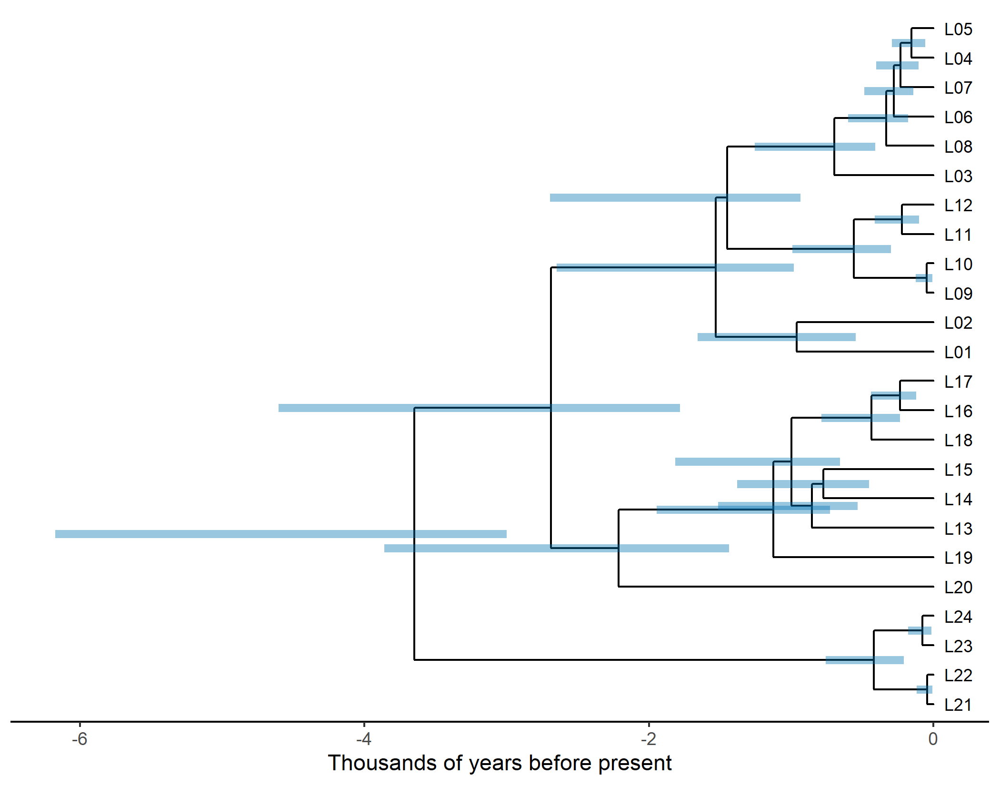
Figure 17.6: The maximum clade credibility tree from TreeAnnotator, with median node ages and 95 percent HPD intervals of node ages (bars), from the BEAST 2 analysis.
The effective sample size (ESS) of a parameter estimates how many independent draws the autocorrelated MCMC sample is worth (Chapter 6). Tracer (Rambaut et al. 2018) reports it for BEAST and MrBayes logs, and the R package coda (Plummer et al. 2006) computes it from any trace. A common rule of thumb asks for an ESS of at least 200 for every parameter of interest. We can see what ESS measures with a simulated trace that starts far from its stationary distribution and is strongly autocorrelated, as an unconverged log-likelihood trace typically is (Figure 17.7).
n_iter <- 2000
ar_part <- as.numeric(arima.sim(list(ar = 0.95), n = n_iter, sd = 2))
loglik_trace <- -2400 + ar_part - 300 * exp(-(seq_len(n_iter)) / 60)
burn <- seq_len(0.1 * n_iter)
op <- par(mar = c(4, 4, 1, 1))
plot(loglik_trace, type = "l", col = "grey30", xlab = "sample",
ylab = "log-likelihood")
rect(0, min(loglik_trace) - 10, max(burn), max(loglik_trace) + 10,
col = adjustcolor("#D55E00", 0.15), border = NA)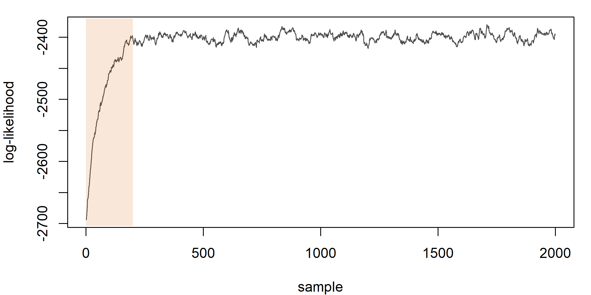
Figure 17.7: A simulated MCMC trace of the log-likelihood. The first 10 percent of the samples (shaded) are a burn-in phase that has not yet reached the stationary distribution.
par(op)
round(c(ESS_all = unname(coda::effectiveSize(loglik_trace)),
ESS_after_burnin = unname(coda::effectiveSize(loglik_trace[-burn]))))#> ESS_all ESS_after_burnin
#> 18 42Two thousand samples are worth only a few dozen independent ones, because each sample is highly correlated with the previous one. Including the burn-in makes things look even more misleading: the trend at the start inflates the variance and distorts the estimate. The remedy for a low ESS is to run the chain longer, to thin less aggressively, or to improve the mixing with better proposals, not to report the estimates anyway. For tree topologies, which have no single numerical value, convergence is assessed by comparing split frequencies between independent runs (the ASDSF reported by MrBayes, Chapter 6) or with tools such as RWTY (Warren et al. 2017). The R package convenience (Fabreti and Höhna 2022) combines checks for continuous parameters and for splits and reports whether a run passes them, and Barido-Sottani et al. (2023) give a practical guide to diagnosing runs that do not.
17.11.2 Summary trees
There is no single best way to summarize a posterior sample of trees (Chapter 2). The maximum clade credibility (MCC) tree is the tree in the sample that maximizes the product of the posterior probabilities of its clades; it is the default in BEAST’s TreeAnnotator and in phangorn’s maxCladeCred() (Heled and Bouckaert 2013). The majority-rule consensus tree contains exactly those clades found in more than half the trees, and is the default in MrBayes. Each internal node of either tree is labeled with its clade credibility, the proportion of posterior trees that contain the clade.
mcc <- maxCladeCred(posterior)
clade_cred <- prop.clades(mcc, posterior, rooted = TRUE) / length(posterior)
mcc$node.label <- sprintf("%.2f", clade_cred)
mcc$node.label[1] <- "" # the root is always present
mrc <- consensus(posterior, p = 0.5, rooted = TRUE)
c(MCC_internal_nodes = mcc$Nnode, consensus_internal_nodes = mrc$Nnode,
MCC_RF_to_truth = RF.dist(unroot(mcc), truth_unrooted, normalize = TRUE))#> MCC_internal_nodes consensus_internal_nodes
#> 23.0000 21.0000
#> MCC_RF_to_truth
#> 0.1429The MCC tree is fully resolved, because it is one of the sampled trees, whereas the majority-rule consensus collapses every clade with support below 50% and is therefore less resolved. Which to report depends on the purpose. The MCC tree is convenient for plotting dates, but it can contain clades with very low support, and its node heights must be summarized separately (TreeAnnotator offers mean, median or common-ancestor heights; Chapter 6). Figure 17.8 shows the MCC tree with clade credibilities.
p_mcc <- ggtree(mcc) %<+% tip_info +
geom_tippoint(aes(color = subgroup), size = 1.6) +
geom_tiplab(aes(color = subgroup), size = 3, offset = 0.08,
show.legend = FALSE) +
support_layers(2.5) +
scale_color_manual(values = sg_cols, name = "Subgroup") +
theme_tree2()
revts(p_mcc) + scale_x_continuous(labels = abs, limits = c(-6.2, 0.8)) +
labs(x = "Thousands of years before present")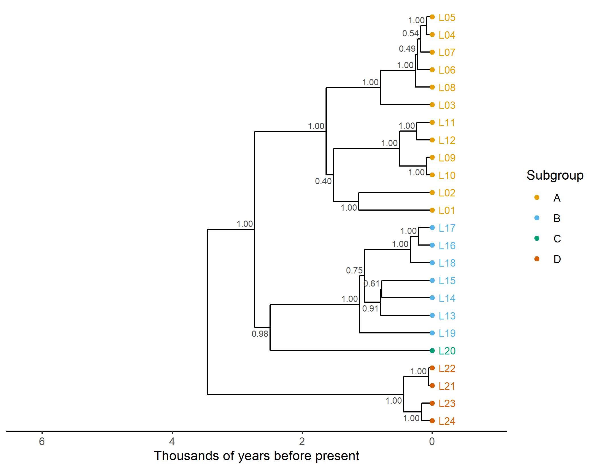
Figure 17.8: Maximum clade credibility tree of the BEAST 2 posterior sample, computed with phangorn, with clade credibilities at internal nodes and tips colored by true subgroup. The time axis is in thousands of years before the present.
17.11.3 Visualizing uncertainty
A summary tree hides the uncertainty that the posterior sample expresses. A DensiTree (Bouckaert 2010) draws every tree in the sample on top of the others with transparent lines, so that well-supported parts of the tree appear as sharp, dark branches and uncertain parts as a blurred cloud (Figure 17.9). The original DensiTree program is distributed with BEAST 2; phangorn provides an R implementation.
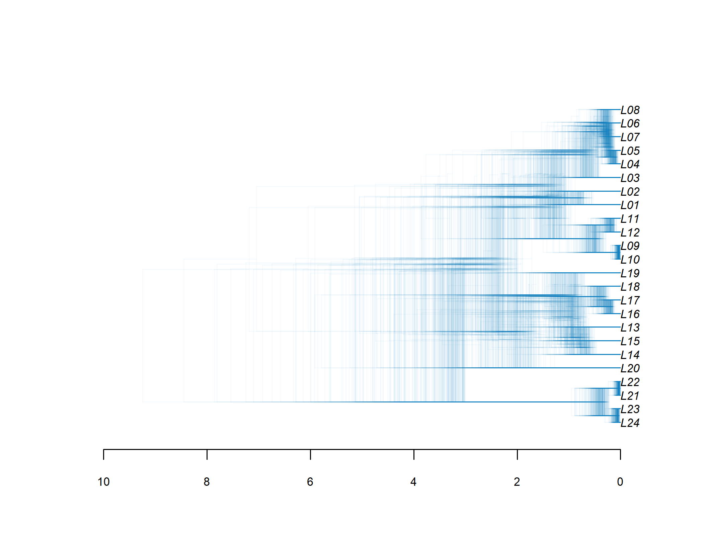
Figure 17.9: DensiTree plot of the BEAST 2 posterior sample of trees. Sharp regions indicate well-supported clades and node heights; blurred regions indicate uncertainty.
The sample can also be compared with the truth tree by tree. The distribution of RF distances between the posterior trees and the true tree shows how much topological uncertainty remains.
rf_post <- sapply(posterior, function(tr)
RF.dist(unroot(tr), truth_unrooted, normalize = TRUE))
summary(rf_post)#> Min. 1st Qu. Median Mean 3rd Qu. Max.
#> 0.0476 0.1429 0.1429 0.1647 0.1905 0.2857The stored output of the other programs can be scored in the same way. Table 17.4 compares the summary tree of each program with the true tree, using the function score_tree() of Step 4. For the two dated analyses it also gives the median root age.
sr <- "software-runs"
mb_con <- treeio::read.mrbayes(
file.path(sr, "mrbayes", "toy_mrbayes_run.nex.con.tre"))
summary_trees <- list(
`MrBayes, consensus` = mb_con@phylo,
`BEAST 2, MCC (TreeAnnotator)` = mcc_beast@phylo,
`RevBayes, MAP tree` =
read.nexus(file.path(sr, "revbayes", "output", "toy_map.tre")),
`IQ-TREE, ML tree` =
read.tree(file.path(sr, "iqtree", "ch17_gtr2.treefile")),
`RAxML-NG, ML tree` =
read.tree(file.path(sr, "raxml-ng", "ch17.raxml.bestTree")))
root_age <- function(td, col) { # median age of the root node
d <- treeio::get.data(td)
as.numeric(d[[col]][d$node == Ntip(td@phylo) + 1])
}
programs <- data.frame(t(sapply(summary_trees, score_tree)),
root_age = c(root_age(mb_con, "age_median"),
root_age(mcc_beast, "height_median"), NA, NA, NA))
knitr::kable(programs, digits = 2, caption = paste(
"Summary trees from the external programs compared with the true tree:",
"normalized Robinson-Foulds distance, true subgroups recovered, and",
"median root age in thousands of years (true value 6)."))| RF_normalized | subgroups_recovered | subgroups_total | root_age | |
|---|---|---|---|---|
| MrBayes, consensus | 0.14 | 3 | 3 | 4.08 |
| BEAST 2, MCC (TreeAnnotator) | 0.14 | 3 | 3 | 3.65 |
| RevBayes, MAP tree | 0.19 | 2 | 3 | NA |
| IQ-TREE, ML tree | 0.19 | 3 | 3 | NA |
| RAxML-NG, ML tree | 0.19 | 3 | 3 | NA |
All five programs recover the same tree up to a few splits. The differences from the truth are again on the short internal branches. Agreement among programs is a weak form of implementation validation. The programs were written independently, so a gross error in one of them would show up as a disagreement. But they share models, conventions and file formats, and they did not run identical models here, so agreement cannot show that any of them is exactly right. MrBayes and BEAST 2 date the root at about 4,000 and 3,600 years, with 95% intervals that reach 7,600 and 7,000 years. Both are pulled toward the lower bound of the root-age prior, for the reason given above.
17.12 Step 10: A comparative analysis over a sample of trees
Language trees are increasingly used not as ends in themselves but as scaffolds for testing hypotheses about other traits, as Chapters 13 and 14 describe. The basic problem is Galton’s problem: related languages are not independent observations, so a correlation across languages can arise from shared inheritance alone. Phylogenetic comparative methods solve this by modeling the expected covariance among languages given the tree. And since the tree is itself uncertain, a careful analysis repeats the comparative analysis over a sample of trees and reports the spread of results.
We illustrate with a continuous predictor \(x\) and a continuous response \(y\). Think of \(x\) as the logarithm of the speaker population and \(y\) as some numerical typological index, although nothing hinges on the interpretation. We simulate both by Brownian motion on the true tree (Chapter 13), with a true regression slope of 0.6: \[\begin{equation} y = \beta_0 + \beta_1 x + \varepsilon, \qquad \varepsilon \sim \mathcal{N}(0, \sigma^2 \mathbf{C}), \tag{17.6} \end{equation}\] where \(\mathbf{C}\) is the matrix of shared branch lengths between pairs of languages implied by the tree. Phylogenetic generalized least squares (PGLS) fits this model by generalized least squares (Grafen 1989); ordinary least squares (OLS) wrongly assumes \(\mathbf{C} = \mathbf{I}\).
set.seed(2) # a separate seed, so this section does not depend on earlier ones
x <- fastBM(true_tree, sig2 = 1)
y <- 0.6 * x + fastBM(true_tree, sig2 = 0.5)
traits <- data.frame(lang = names(x), x = x, y = y[names(x)])
fit_ols <- lm(y ~ x, data = traits)
fit_pgls_true <- gls(y ~ x, data = traits,
correlation = corBrownian(1, true_tree, form = ~lang))
rbind(OLS = coef(summary(fit_ols))["x", c(1, 2, 4)],
`PGLS, true tree` = coef(summary(fit_pgls_true))["x", c(1, 2, 4)])#> Estimate Std. Error Pr(>|t|)
#> OLS 0.7062 0.1791 0.000692
#> PGLS, true tree 0.5418 0.1840 0.007497Now we repeat the PGLS on every tree in the posterior sample, as one would with a real posterior. We also estimate Pagel’s \(\lambda\) (Pagel 1999a) for the response on every tree, as a measure of phylogenetic signal (Chapter 13).
pgls_one <- function(tr) {
m <- try(gls(y ~ x, data = traits,
correlation = corBrownian(1, tr, form = ~lang)), silent = TRUE)
if (inherits(m, "try-error")) return(c(slope = NA, se = NA, p = NA))
cf <- coef(summary(m))["x", ]
c(slope = cf[["Value"]], se = cf[["Std.Error"]], p = cf[["p-value"]])
}
pgls_post <- as.data.frame(t(sapply(posterior, pgls_one)))
lambda_post <- sapply(posterior, function(tr)
phylosig(tr, setNames(traits$y, traits$lang), method = "lambda")$lambda)
round(rbind(
slope = quantile(pgls_post$slope, c(0.025, 0.5, 0.975), na.rm = TRUE),
lambda = quantile(lambda_post, c(0.025, 0.5, 0.975))), 3)#> 2.5% 50% 97.5%
#> slope 0.371 0.491 0.595
#> lambda 0.999 1.007 1.018#> share_p_below_0.05
#> 0.9412ggplot(pgls_post, aes(x = slope)) +
geom_histogram(bins = 15, fill = "grey70", color = "white") +
geom_vline(xintercept = 0.6, linetype = "dashed") +
geom_vline(xintercept = coef(fit_ols)[["x"]], linetype = "dotted") +
geom_vline(xintercept = coef(fit_pgls_true)[["x"]]) +
labs(x = "PGLS slope estimate", y = "Number of trees") +
theme_minimal(base_size = 11)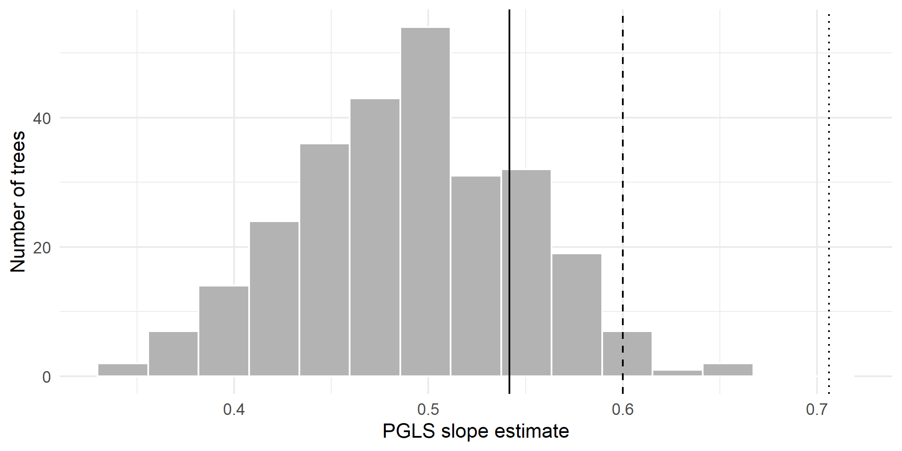
Figure 17.10: Distribution of PGLS slope estimates across the trees of the BEAST 2 posterior sample. The dashed line is the true slope (0.6), the dotted line the OLS estimate, and the solid line the PGLS estimate on the true tree.
Three things are worth noticing in these results. First, phylogenetic signal in the response is strong (\(\lambda\) close to 1 on every tree), as expected for a trait that evolves by Brownian motion, so ignoring the tree is not an option. Second, the OLS and PGLS point estimates (0.71 and 0.54 against a true value of 0.6) need not differ much in any one dataset. The main problem with OLS is that it treats the 24 languages as independent data points, whereas much of their variation is shared within subgroups. Its standard errors are therefore too small, and with phylogenetically structured data it rejects true null hypotheses far more often than its nominal error rate (Chapter 13). Third, the spread of PGLS estimates across the tree sample is a direct measure of how much phylogenetic uncertainty matters for the conclusion. Here 94% of the trees yield a significant positive slope, so the conclusion is robust to tree uncertainty. In a real study the spread is often wider, and it should be reported. This is also why a downstream analysis should not be run on the MCC tree alone. The MCC tree is one tree from the sample, with summary node heights; using it as if it were known treats every clade, including those with low credibility, as certain, and it can shift or narrow the estimate even when its topology looks plausible. A fully Bayesian alternative integrates over trees within a single analysis. BayesTraits, for example, samples a new tree from the posterior at each step of its chain (Pagel et al. 2004). Alternatively, one can fit a Bayesian phylogenetic mixed model separately on each tree and pool the posterior samples, as in the following code with MCMCglmm (Hadfield 2010). Twenty trees and short chains keep it fast; a real analysis would use more of both.
# a Bayesian phylogenetic mixed model over 20 trees of the posterior sample
library(MCMCglmm)
set.seed(4)
prior <- list(G = list(G1 = list(V = 1, nu = 0.002)),
R = list(V = 1, nu = 0.002))
some_trees <- posterior[round(seq(1, length(posterior), length.out = 20))]
draws <- lapply(some_trees, function(tr) {
Ainv <- inverseA(tr, nodes = "TIPS")$Ainv
m <- MCMCglmm(y ~ x, random = ~lang, ginverse = list(lang = Ainv),
data = traits, prior = prior, nitt = 13000, burnin = 3000,
thin = 10, verbose = FALSE)
m$Sol[, "x"]
})
quantile(unlist(draws), c(0.025, 0.5, 0.975)) # slope, integrating over trees#> 2.5% 50% 97.5%
#> 0.09289 0.50572 0.9192217.13 Step 11: From toy data to real data
Everything above runs on a simulated table with three columns. Replacing it with real data is mostly a matter of reading the right files and joining them correctly. Real linguistic datasets are increasingly published in the Cross-Linguistic Data Formats (CLDF) (Forkel et al. 2018), a standard built on plain CSV files plus a JSON metadata file that describes their contents. Lexibank (List, Forkel, Greenhill, et al. 2022) distributes more than a hundred wordlists in CLDF, with concepts linked to Concepticon (List et al. 2016) and languages linked to Glottolog (Hammarström et al. 2024); Grambank (Skirgård et al. 2023) distributes structural data in the same format. Appendix G describes these and other resources.
17.13.1 The CLDF data model
A CLDF dataset is a directory of tables, each of a standard type, plus a metadata file (for example cldf-metadata.json or Wordlist-metadata.json) that declares which file holds which table and which columns hold which standard properties. Table 17.5 lists the tables most relevant to phylogenetics.
| CLDF component | Usual file | Key columns | Content |
|---|---|---|---|
LanguageTable |
languages.csv |
ID, Name, Glottocode, Latitude, Longitude |
one row per language variety |
ParameterTable |
parameters.csv |
ID, Name, Concepticon_ID |
one row per concept (wordlists) or feature (structural data) |
FormTable |
forms.csv |
ID, Language_ID, Parameter_ID, Value, Form, Segments |
one row per word form |
CognateTable |
cognates.csv |
ID, Form_ID, Cognateset_ID |
one row per cognate judgment |
ValueTable |
values.csv |
ID, Language_ID, Parameter_ID, Value, Code_ID |
one row per language-feature value (structural data) |
CodeTable |
codes.csv |
ID, Parameter_ID, Name |
the possible values of each categorical feature |
Because every table refers to the others by identifiers (Language_ID, Parameter_ID, Form_ID), building the input for cognates_to_binary() amounts to two joins. The code below is not run when the book is built, because it requires a downloaded dataset. We tested it on walworthpolynesian (version 1.1), a Lexibank wordlist of 31 Polynesian languages with expert cognate judgments. There it produces a matrix of 31 languages and 1,456 cognate characters in a few seconds.
# not run: requires a Lexibank dataset with cognate judgments, e.g.
# git clone https://github.com/lexibank/<dataset>.git
# (tested with <dataset> = walworthpolynesian, release v1.1)
library(readr)
library(dplyr)
cldf_dir <- "<dataset>/cldf"
forms <- read_csv(file.path(cldf_dir, "forms.csv"), show_col_types = FALSE)
cognates <- read_csv(file.path(cldf_dir, "cognates.csv"),
show_col_types = FALSE)
languages <- read_csv(file.path(cldf_dir, "languages.csv"),
show_col_types = FALSE)
cog_real <- cognates |>
inner_join(forms, by = c("Form_ID" = "ID")) |>
transmute(Language_ID, Parameter_ID,
# make cognate set identifiers unique within meanings
Cognateset_ID = paste(Parameter_ID, Cognateset_ID, sep = "-")) |>
distinct()
bin_real <- cognates_to_binary(cog_real)
# label languages by Glottocode, to join with other datasets later;
# check the identifiers before anything is built from the matrix
glotto <- setNames(languages$Glottocode, languages$ID)
ids <- unname(glotto[rownames(bin_real)])
if (anyNA(ids))
stop("no Glottocode for: ",
paste(rownames(bin_real)[is.na(ids)], collapse = ", "))
if (anyDuplicated(ids))
stop("varieties sharing a Glottocode: ",
paste(unique(ids[duplicated(ids)]), collapse = ", "))
rownames(bin_real) <- ids
data_real <- phyDat(bin_real, type = "USER", levels = c("0", "1"),
ambiguity = "?")Several practical issues arise with real data that the toy example hides. Some datasets list more than one variety per Glottocode, so labeling by Glottocode can create duplicate row names; decide in advance whether to keep one variety per language or to use the dataset’s own identifiers. Some cognate judgments are flagged as doubtful (a Doubt column in the CognateTable), or as loans (a Loan column in the FormTable of some datasets), and a principled decision is needed about whether to exclude them, code them as missing, or run the analysis both ways (Chapter 8). Datasets also differ in their concept lists, so combining two datasets means matching concepts through their Concepticon identifiers rather than their names. The R package rcldf reads a CLDF dataset directly from its metadata file and returns its tables as data frames, which saves hard-coding file names.
17.13.2 When there are no cognate judgments
Many Lexibank datasets contain word forms segmented into sounds but no expert cognate judgments. For these, automated cognate detection (Chapter 3) can supply provisional cognate sets. The standard tool is the LexStat algorithm in the Python library LingPy (List et al. 2017), which learns language-pair-specific sound correspondences and clusters words within each meaning. The following Python code (not run) reads a Lexibank dataset, runs LexStat, and writes a table with a cognate set identifier for each word, which can then be read into R and passed to cognates_to_binary().
# not run: Python with lingpy installed (pip install lingpy);
# tested with lingpy 2.6.14
from lingpy import Wordlist, LexStat
wl = Wordlist.from_cldf("<dataset>/cldf/cldf-metadata.json")
wl.output("tsv", filename="wordlist") # writes wordlist.tsv
lex = LexStat("wordlist.tsv")
lex.get_scorer(runs=10000) # permutation test for correspondences
lex.cluster(method="lexstat", threshold=0.55, ref="cogid")
lex.output("tsv", filename="wordlist-cognates")We ran this code on the Polynesian dataset used in Section 17.14. The permutation test is the slow step, and the whole run took about 20 minutes on one processor core. LexStat grouped the 7,518 words into 1,897 cognate sets, where the experts recognize 1,456. Compared with the expert judgments, the automatic sets had a B-cubed precision of 0.95 and a recall of 0.79. The algorithm rarely groups words that the experts keep apart, but it splits some expert cognate sets, typically where sound change has made related words look dissimilar.
How much does it matter whether cognates are judged by experts or by an algorithm? Rama et al. (2018) addressed this question directly. They inferred cognate sets automatically for several language families with expert cognate judgments available, built binary matrices from both the automatic and the expert cognates, inferred Bayesian trees from each, and compared the trees with expert classifications from Glottolog. Trees from automatically detected cognates came reasonably close to those from expert cognates, although expert judgments generally remained better. The study suggests a practical division of labor: automated detection makes it possible to analyze families for which no expert cognate coding exists and to check expert codings for inconsistencies, but it is not yet a substitute for expert judgment where that is available. Jäger (2018) pushed the automated approach to a global scale, inferring cognate classes and trees from the ASJP word lists for thousands of languages.
17.13.3 Structural data and Glottolog trees
Grambank (Skirgård et al. 2023) codes nearly two hundred grammatical features for more than two thousand languages, mostly as binary presence/absence features. Its CLDF ValueTable can be reshaped into a matrix and analyzed with exactly the tools of Steps 4 to 7 (with the caveats about structural data discussed in Chapter 3), or, more commonly, used as trait data in a comparative analysis over a lexical tree. Since both Grambank and Lexibank identify languages by Glottocode, joining them is straightforward.
# not run: requires a clone of https://github.com/grambank/grambank
# (tested with release v1.0.3)
library(tidyr)
gb_values <- read_csv("grambank/cldf/values.csv", show_col_types = FALSE)
gb <- gb_values |>
select(Language_ID, Parameter_ID, Value) |>
pivot_wider(names_from = Parameter_ID, values_from = Value)
gb_mat <- as.matrix(gb[, -1])
rownames(gb_mat) <- gb$Language_ID # Grambank uses Glottocodes
gb_mat[is.na(gb_mat)] <- "?" # unrecorded -> missing
# keep the languages in both the lexical tree and Grambank
shared <- intersect(rownames(gb_mat), mcc_real$tip.label)
# mcc_real: a summary tree from a real analysis, tips labeled by Glottocode
tree_gb <- keep.tip(mcc_real, shared)
trait <- gb_mat[shared, 1] # any one feature as a trait
# multistate features can be split into binary indicators before analysisWe tested this code on Grambank 1.0.3, with a neighbor-joining tree of the 31 Polynesian languages of walworthpolynesian, labeled by Glottocode, standing in for mcc_real. It builds a matrix of 2,467 languages by 195 features, and 26 of the 31 Polynesian languages are in Grambank.
For comparisons across many families, no dated lexical tree exists, and analysts often fall back on the Glottolog classification as a topology, with branch lengths assigned by a rule such as Grafen’s method (ape::compute.brlen()), or on a global tree inferred from ASJP data. Chapter 13 discusses the consequences of such arbitrary branch lengths. Reading Glottolog’s Newick trees requires some care, because the node labels contain characters with special meaning in Newick; community R packages such as glottoTrees help with parsing, pruning and combining them.
17.13.4 Scaling up the inference
For a few dozen languages, phangorn is fast enough for maximum-likelihood analysis. For hundreds of languages, dedicated programs are much faster. IQ-TREE (Minh, Schmidt, et al. 2020) and RAxML-NG (Kozlov et al. 2019) both support binary characters, ascertainment correction and fast bootstrap approximations. Both read the PHYLIP format, which phangorn writes directly.
phylip_file <- file.path(out_dir, "toy_cognates.phy")
write.phyDat(cog_var, file = phylip_file, format = "phylip")
show_file(phylip_file, n = 3)#> 24 430
#> L01 0100101000000001000001001010100000000010100010001000????100010000000 ...
#> L02 1000??10000000001000010010100010000000101000100100000100100010000000 ...# run in a shell, not in R: maximum likelihood with a binary model,
# estimated state frequencies, gamma rates, ascertainment correction
# (variable characters only) and 1000 ultrafast bootstrap replicates
# (IQ-TREE 3 is called iqtree3; IQ-TREE 2 is called iqtree2)
iqtree3 -s toy_cognates.phy -m GTR2+FO+G4+ASC -B 1000
# the corresponding RAxML-NG analysis with 100 standard bootstrap replicates
raxml-ng --all --msa toy_cognates.phy --model BIN+G+ASC_LEWIS --bs-trees 100The resulting tree files are Newick, read with ape::read.tree(), and bootstrap tree sets can be summarized with the same functions we used above.
BEASTling (Maurits et al. 2017) was designed to make the workflow of this chapter easier for linguists. Its authors observed that writing BEAST 2 XML by hand was a serious barrier, and that the files were rarely published, which made analyses hard to reproduce. BEASTling instead takes a short human-readable configuration file and a data file, and generates the XML. Because the configuration file is short, it can be printed in full in a paper’s supplementary material, and anyone with the same data and BEASTling version can regenerate the identical XML. BEASTling also integrates Glottolog, so that languages can be selected by family or macro-area and Glottolog subgroups can be imposed as monophyly constraints, and it supports models for lexical and typological data in the same analysis. The approach illustrates a general principle: the more of a pipeline that is specified in short, declarative, version-controlled files, the easier it is to reproduce and to vary.
Lexibank (List, Forkel, Greenhill, et al. 2022) is an attempt to do for lexical data what GenBank did for DNA sequences. It aggregates more than a hundred published wordlists, converts each to CLDF with a reproducible conversion script (written with the cldfbench and pylexibank Python packages), links every concept to Concepticon and every language to Glottolog, and standardizes phonetic transcriptions so that words can be segmented into sounds automatically. The result is a single collection of wordlists covering thousands of language varieties, in which every dataset is versioned, archived on Zenodo and citable. For the workflow of this chapter the consequence is that Step 1 (data assembly) and much of Step 2 (matrix building) can be done with a few lines of code for any dataset in the collection, and that an analysis can cite the exact version of the data it used.
17.14 A case study with real data: Polynesian
We now run the same pipeline on a real language family. The data are the Polynesian wordlist of Walworth (2018) in its Lexibank version (Walworth 2024), released under a CC BY 4.0 licence. It records Blust’s list of 210 basic meanings for 30 Polynesian languages and a Proto-Polynesian reconstruction, with expert cognate judgments. Polynesian is a good first family: it is small, its history is short (the Polynesian homeland in Tonga and Samoa was settled roughly three thousand years ago) (Gray et al. 2009), and its main subgroups are well established. The four CLDF tables the analysis needs, about 1.5 MB, are stored in the book’s repository in data/case-study/, together with the Glottolog classification of each language (Hammarström et al. 2024), so the section runs offline.
17.14.1 From CLDF to a character matrix
The code is that of Section 17.13.1, with two decisions specific to this dataset. The Proto-Polynesian “language” is a reconstruction made with the comparative method from the daughter languages. It is not independent evidence, so we leave it out. And 213 forms are flagged as loans in the Loan column of the FormTable. We drop them, so that a meaning whose only recorded word in a language is a loan is scored as missing for that language (Chapter 8).
library(readr)
library(dplyr)
cs_dir <- "data/case-study"
read_cs <- function(f) read_csv(file.path(cs_dir, f), show_col_types = FALSE)
forms_p <- read_cs("forms.csv")
cognates_p <- read_cs("cognates.csv")
languages_p <- read_cs("languages.csv")
cog_poly <- cognates_p |>
inner_join(forms_p, by = c("Form_ID" = "ID")) |>
filter(Language_ID != "Polynesian", # Proto-Polynesian, a reconstruction
!Loan) |> # forms flagged as loans
transmute(Language_ID, Parameter_ID,
Cognateset_ID = paste(Parameter_ID, Cognateset_ID, sep = "-")) |>
distinct()
bin_poly <- cognates_to_binary(cog_poly)
# identifiers: the dataset's language IDs, which are readable names;
# check them and their Glottocodes before building anything from the matrix
glotto_poly <- setNames(languages_p$Glottocode,
languages_p$ID)[rownames(bin_poly)]
stopifnot(!anyDuplicated(rownames(bin_poly)), !anyNA(glotto_poly),
!anyDuplicated(glotto_poly))
data_poly <- phyDat(bin_poly, type = "USER", levels = c("0", "1"),
ambiguity = "?")
c(languages = nrow(bin_poly), meanings = length(unique(cog_poly$Parameter_ID)),
characters = ncol(bin_poly), missing = round(mean(bin_poly == "?"), 3),
singletons = sum(colSums(bin_poly == "1") == 1))#> languages meanings characters missing singletons
#> 30.000 210.000 1396.000 0.071 769.000The Glottolog classification gives the subgroups we will look for. We take every Glottolog subgroup below Polynesian that contains at least two of the 30 languages.
gl <- read_cs("glottolog_classification.csv")
lineage <- strsplit(setNames(gl$Classification, gl$Glottocode)[glotto_poly],
" > ")
names(lineage) <- rownames(bin_poly)
groups <- unique(unlist(lapply(lineage, `[`, -1)))
members <- lapply(setNames(groups, groups), function(g)
names(lineage)[vapply(lineage, function(l) g %in% l, logical(1))])
members <- members[lengths(members) >= 2 & lengths(members) < nrow(bin_poly)]
lengths(members)#> Nuclear Polynesian
#> 28
#> Vanuatu-Loyalty Outliers
#> 3
#> Mele-Futuna
#> 2
#> Northern Outlier Polynesian-East Polynesian
#> 16
#> Solomons Northern Outlier Polynesian-East Polynesian
#> 15
#> Central Northern Outlier Polynesian-East Polynesian
#> 14
#> East Polynesian
#> 12
#> East Polynesian Proximal
#> 9
#> Central Northern Outlier Polynesian
#> 2
#> East Polynesian Distal
#> 3
#> Far East Polynesian
#> 2
#> Southern East Polynesian Proximal
#> 8
#> Tongic
#> 2
#> Ellicean
#> 3
#> Pukapukic
#> 2
#> Tahitian-Austral
#> 3
#> Austral
#> 2These are nested. Tongic (Tongan and Niuean) and Nuclear Polynesian (all the rest) form the primary split. Within Nuclear Polynesian, the East Polynesian languages, from Hawaiian to Rapanui and Māori, form the most famous subgroup. They descend from the language of the settlers who reached East Polynesia less than a thousand years ago (Wilmshurst et al. 2011). Several intermediate groupings link East Polynesian with Polynesian Outliers spoken in the Solomon Islands and Micronesia.
17.14.2 Exploration and maximum likelihood
The delta score and the NeighborNet of Step 3 show how tree-like the data are (Figure 17.11).
d_poly <- dist.hamming(data_poly)
delta_poly <- c(mean = delta.score(data_poly, arg = "mean"),
sd = delta.score(data_poly, arg = "sd"))
round(delta_poly, 3)#> mean sd
#> 0.337 0.271nnet_poly <- neighborNet(d_poly)
tip_col <- ifelse(nnet_poly$tip.label %in% members[["Tongic"]], "#D55E00",
ifelse(nnet_poly$tip.label %in% members[["East Polynesian"]],
"#0072B2", "grey20"))
op <- par(mar = c(1.5, 1.5, 3, 1.5), xpd = NA)
pn_poly <- plot(nnet_poly, type = "2D", show.tip.label = FALSE)
net_labels(pn_poly, nnet_poly$tip.label, col = tip_col) # helper (appendix)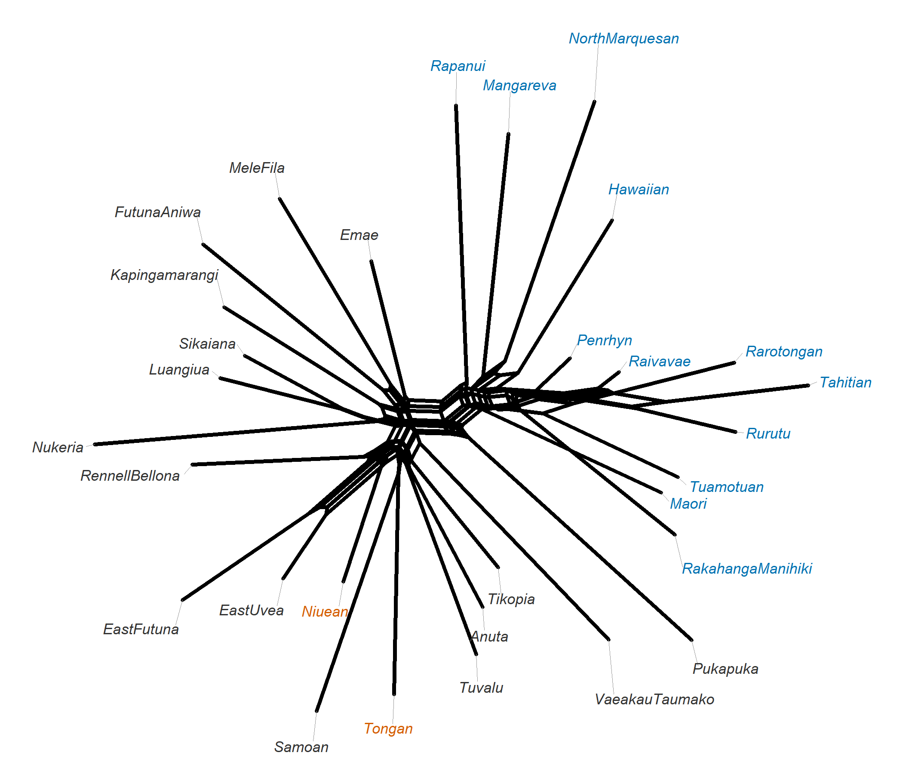
Figure 17.11: NeighborNet of the Hamming distances between the 30 Polynesian languages. Tongic languages (Tongan, Niuean) and East Polynesian languages are marked in color.
We then fit the binary model by maximum likelihood, with and without gamma rate variation, starting from a neighbor-joining tree, and assess the NJ tree with 100 bootstrap replicates.
tree_nj_poly <- NJ(d_poly)
bs_nj_poly <- bootstrap.phyDat(data_poly,
function(x) NJ(dist.hamming(x)), bs = 100)
fit_poly <- optim.pml(pml(tree_nj_poly, data_poly), optNni = TRUE,
optBf = TRUE, control = ctrl)
fit_poly_g <- optim.pml(update(fit_poly, k = 4), optNni = TRUE, optBf = TRUE,
optGamma = TRUE, control = ctrl)
round(c(AIC_no_gamma = AIC(fit_poly), AIC_gamma = AIC(fit_poly_g),
gamma_shape = fit_poly_g$shape, pi_present = fit_poly_g$bf[2]), 3)#> AIC_no_gamma AIC_gamma gamma_shape pi_present
#> 23270.788 22922.139 2.584 0.180A nonparametric bootstrap of the ML search in phangorn takes a few seconds per replicate on these data, which is too slow for the book’s build. We therefore ran the same model in IQ-TREE on the variable characters, with the ultrafast bootstrap. The PHYLIP file is written as in Step 11, and the output is stored in software-runs/case-study/.
poly_var <- bin_poly[, !apply(bin_poly, 2, function(x) all(x[x != "?"] == "1"))]
write.phyDat(phyDat(poly_var, type = "USER", levels = c("0", "1"),
ambiguity = "?"),
file = file.path(out_dir, "poly.phy"), format = "phylip")
seq_poly <- sprintf(
' <sequence id="seq_%s" taxon="%s" totalcount="2" value="0%s"/>',
rownames(bin_poly), rownames(bin_poly),
apply(bin_poly, 1, paste, collapse = ""))
writeLines(c(paste('<data id="cognates" spec="Alignment" dataType="binary"',
'ascertained="true" excludefrom="0" excludeto="1">'),
seq_poly, "</data>"),
file.path(out_dir, "poly_beast_data.xml"))iqtree3 -s poly.phy -m GTR2+FO+G4+ASC -B 1000 -T 1 -seed 17 --prefix polyiq_poly <- read.tree(file.path("software-runs", "case-study", "iqtree",
"poly.treefile"))
iq_poly <- root(iq_poly, outgroup = "Tongan", resolve.root = TRUE,
edgelabel = TRUE) # Tongic is not monophyletic here
tip_info_poly <- data.frame(
label = rownames(bin_poly),
group = ifelse(rownames(bin_poly) %in% members[["Tongic"]], "Tongic",
ifelse(rownames(bin_poly) %in% members[["East Polynesian"]],
"East Polynesian", "other Nuclear Polynesian")))
ggtree(iq_poly) %<+% tip_info_poly +
geom_tippoint(aes(color = group), size = 1.4) +
geom_tiplab(aes(color = group), size = 3, offset = 0.002,
show.legend = FALSE) +
support_layers(2.4, drop = c("", "Root")) + # plotting helper (appendix)
scale_color_manual(values = c(Tongic = "#D55E00",
`East Polynesian` = "#0072B2",
`other Nuclear Polynesian` = "grey20"),
name = NULL) +
theme_tree2() + xlim(0, max(node.depth.edgelength(iq_poly)) * 1.3) +
labs(x = "Expected changes per character")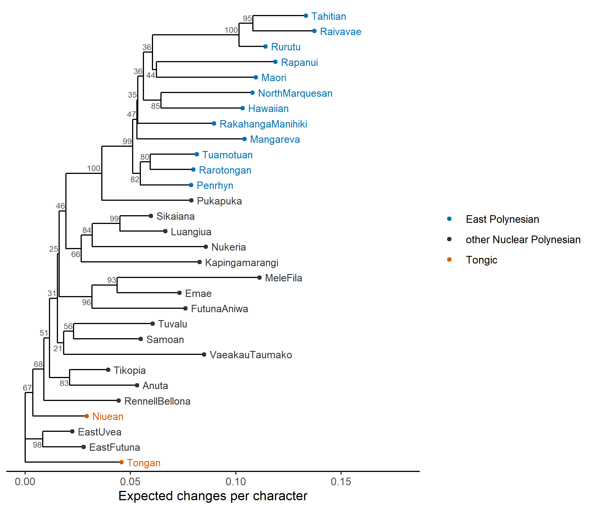
Figure 17.12: Maximum-likelihood tree of the 30 Polynesian languages from IQ-TREE (binary model with estimated frequencies, gamma rates and ascertainment correction), rooted on Tongan, with ultrafast bootstrap support (percent) at internal nodes. Colors as in the NeighborNet.
17.14.3 A Bayesian analysis
For the Bayesian analysis we adapted the BEAST 2 file of Section 17.10.3 (software-runs/case-study/poly_beast.xml): the same binary model with ascertainment correction and gamma rates, and a Yule prior. We used no calibrations. The strict clock has its rate fixed at 1, so node heights are in expected changes per character, a relative time scale. Two runs of 1.5 million states each, sampled every 1,000 states, took about 13 minutes each on one processor core. Every parameter reached an ESS above 600 in each run. As before, the book keeps every tenth sampled tree.
poly_dir <- file.path("software-runs", "case-study", "beast2")
read_poly <- function(run, file) file.path(poly_dir, run, file)
post_poly <- do.call(c, lapply(runs, function(run) {
tr <- read.nexus(read_poly(run, "poly_thinned.trees"))
tr[-seq_len(floor(0.1 * length(tr)))]
}))
traces_poly <- lapply(runs, function(run) {
tr <- read.table(read_poly(run, "poly.log"), header = TRUE,
comment.char = "#")
tr[-seq_len(floor(0.1 * nrow(tr))), ]
})
pars_poly <- c("posterior", "TreeHeight", "gammaShape", "freqParameter.2")
round(sapply(traces_poly, function(tr)
coda::effectiveSize(tr[, pars_poly])))#> [,1] [,2]
#> posterior 821 815
#> TreeHeight 919 977
#> gammaShape 931 907
#> freqParameter.2 1088 1198mcc_poly <- maxCladeCred(post_poly)
cred <- prop.clades(mcc_poly, post_poly, rooted = TRUE) / length(post_poly)
mcc_poly$node.label <- ifelse(seq_along(cred) == 1, "", sprintf("%.2f", cred))ggtree(mcc_poly) %<+% tip_info_poly +
geom_tippoint(aes(color = group), size = 1.4) +
geom_tiplab(aes(color = group), size = 3, offset = 0.002,
show.legend = FALSE) +
support_layers(2.4) + # plotting helper (appendix)
scale_color_manual(values = c(Tongic = "#D55E00",
`East Polynesian` = "#0072B2",
`other Nuclear Polynesian` = "grey20"),
name = NULL) +
theme_tree2() + xlim(0, max(node.depth.edgelength(mcc_poly)) * 1.3) +
labs(x = "Expected changes per character since the root")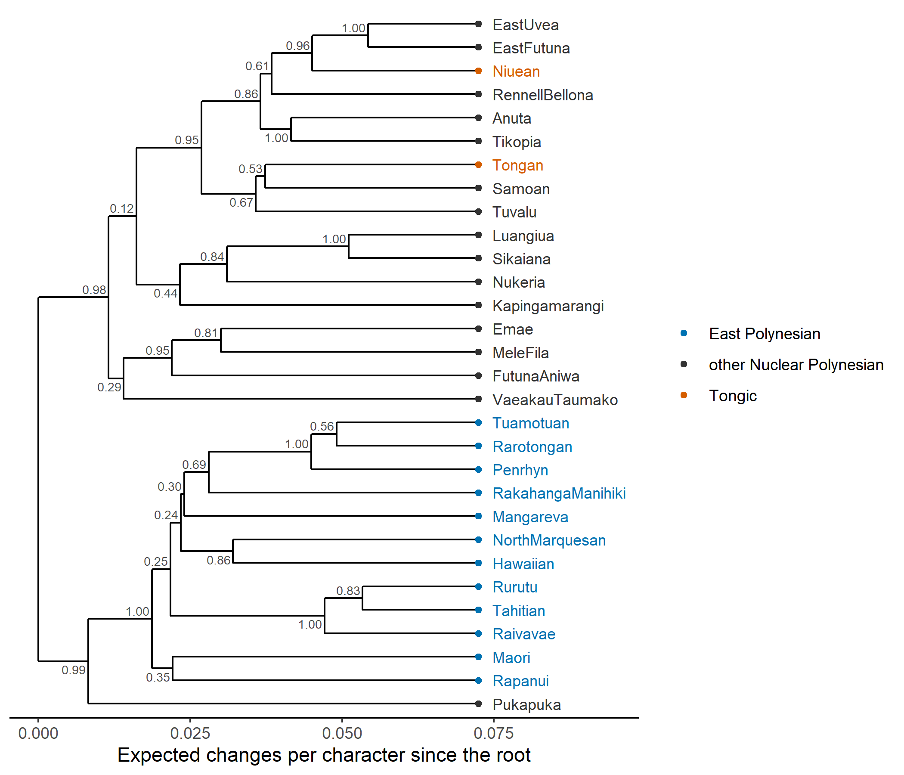
Figure 17.13: Maximum clade credibility tree of the BEAST 2 posterior sample for Polynesian, with clade credibilities at internal nodes. The horizontal axis is in expected changes per character, measured from the root; there are no calibrations. Colors as in the NeighborNet.
17.14.4 Which subgroups are recovered?
Table 17.6 checks each Glottolog subgroup against the NJ and ML trees, with the NJ bootstrap support, and gives its posterior probability in the BEAST 2 sample.
iq_unrooted <- unroot(iq_poly)
recovered <- function(tree, g) is.monophyletic(unroot(tree), g)
support <- function(trees, g, rooted = FALSE)
mean(vapply(trees, function(tr)
if (rooted) is.monophyletic(tr, g) else recovered(tr, g), logical(1)))
poly_table <- data.frame(
languages = lengths(members),
NJ = vapply(members, function(g) recovered(tree_nj_poly, g), logical(1)),
NJ_bootstrap = vapply(members, function(g) support(bs_nj_poly, g), 0),
ML = vapply(members, function(g) recovered(iq_unrooted, g), logical(1)),
BEAST_posterior = vapply(members, function(g)
support(post_poly, g, rooted = TRUE), 0))
knitr::kable(poly_table, digits = 2, caption = paste(
"Glottolog subgroups with at least two of the 30 languages: whether the",
"NJ and IQ-TREE ML trees contain them, their NJ bootstrap support, and",
"their posterior probability in the BEAST 2 sample (rooted clades)."))| languages | NJ | NJ_bootstrap | ML | BEAST_posterior | |
|---|---|---|---|---|---|
| Nuclear Polynesian | 28 | FALSE | 0.05 | FALSE | 0.00 |
| Vanuatu-Loyalty Outliers | 3 | TRUE | 0.41 | TRUE | 0.95 |
| Mele-Futuna | 2 | TRUE | 0.74 | FALSE | 0.16 |
| Northern Outlier Polynesian-East Polynesian | 16 | FALSE | 0.00 | FALSE | 0.00 |
| Solomons Northern Outlier Polynesian-East Polynesian | 15 | FALSE | 0.00 | FALSE | 0.00 |
| Central Northern Outlier Polynesian-East Polynesian | 14 | FALSE | 0.00 | FALSE | 0.00 |
| East Polynesian | 12 | TRUE | 0.51 | TRUE | 1.00 |
| East Polynesian Proximal | 9 | FALSE | 0.02 | FALSE | 0.00 |
| Central Northern Outlier Polynesian | 2 | FALSE | 0.01 | FALSE | 0.00 |
| East Polynesian Distal | 3 | FALSE | 0.12 | FALSE | 0.02 |
| Far East Polynesian | 2 | FALSE | 0.03 | FALSE | 0.10 |
| Southern East Polynesian Proximal | 8 | FALSE | 0.01 | FALSE | 0.00 |
| Tongic | 2 | FALSE | 0.05 | FALSE | 0.01 |
| Ellicean | 3 | FALSE | 0.01 | FALSE | 0.00 |
| Pukapukic | 2 | FALSE | 0.01 | FALSE | 0.00 |
| Tahitian-Austral | 3 | TRUE | 1.00 | TRUE | 1.00 |
| Austral | 2 | FALSE | 0.00 | FALSE | 0.03 |
Compared with the simulation, the real data are much less tidy. The mean delta score is 0.34, against 0.13 for the simulated family. The NeighborNet shows large boxes in the center, where the Outliers, Samoan, Tuvaluan and the Tongic languages meet. Rate variation among characters, which the simulated data hardly showed, is strongly supported: adding gamma rates lowers the AIC by 349 units. Support is also lower. Many internal nodes of the ML tree have ultrafast bootstrap values well below 95%, and the methods disagree with each other on about half of their splits.
Only 3 of the 17 Glottolog subgroups appear in the ML tree. One of them is East Polynesian, the best-established subgroup in the family, which has a posterior probability of 1 in the BEAST 2 sample. The deeper structure is not recovered. Tongan and Niuean do not form a Tongic clade. East Uvean and East Futunan are placed next to Niuean or Tongan rather than among the other Nuclear Polynesian languages, and in the BEAST 2 tree Tongan groups with Samoan. This is the expected signature of contact. East Uvean, in particular, borrowed heavily from Tongan, and borrowings that the coders did not recognize as loans look like shared inheritance (Chapter 8). Pukapuka joins East Polynesian, whereas Glottolog places it with Samoan and Tuvaluan, which is again consistent with later contact. In the strict-clock BEAST 2 analysis, the root falls between East Polynesian (with Pukapuka) and all other languages, with a posterior probability of 0.99, instead of between Tongic and Nuclear Polynesian. The East Polynesian languages have long branches. A strict clock interprets that extra change as extra time and places the root on their side. A relaxed clock, an outgroup or a prior on the root position would be needed to root this tree credibly (Chapter 9). The intermediate groupings that link East Polynesian with particular Outliers rest on few shared innovations, and a basic-vocabulary list of 210 meanings is unlikely to resolve them.
These comparisons need a caveat. Agreement with the expert subgroups is not independent validation of the methods. The cognate judgments are themselves products of the comparative method, and the Glottolog subgrouping comes from the same method, applied by overlapping communities of scholars to overlapping data. Moreover, a shared cognate is not the same thing as a shared innovation: two languages can share a cognate because both retained it. A tree that reproduces the classification may partly reproduce the judgments that went into the coding, and a disagreement may reflect either the method or the coding. In the vocabulary of Section 6.10, the Polynesian analysis is a first step toward empirical adequacy (the delta score and the NeighborNet show where the tree model fits poorly) and toward historical interpretation, not a validation of the methods. The simulation is the only setting in which we know the right answer. The real data show where a pipeline that works well on clean data runs into the problems discussed in Chapters 8 and 15: contact, rate variation among lineages, and short internal branches.
17.15 Validating the pipeline
The analyses of this chapter provide different kinds of evidence, and it helps to name them with the vocabulary of Section 6.10.
- Implementation validation asks whether the software computes what the model says. Three checks in this chapter are of this kind: reading the exported NEXUS file back in (Step 8), running similar models in five independent programs (Table 17.4), and running each Bayesian analysis without data to see the prior it actually uses. The second is the weakest, for the reasons given in Step 9.
- Parameter recovery asks whether the pipeline recovers a history simulated under its own assumptions. Steps 4 to 9 on the toy family are tests of this kind. Strictly, the simulator and the models differ slightly: the simulator is Dollo-like and varies rates among meanings, whereas the inference models are reversible and binary. The data are still much closer to the models than any real dataset.
- Robustness under misspecification asks how the results change when the data violate the model in realistic ways, through borrowing, rate shifts in one lineage, coding error or missing languages. The simulations of this chapter do not test it; the second computational exercise shows how to begin, and Chapter (ref?)(issues) gives examples.
- Empirical model adequacy asks whether the fitted model could have produced the real data. AIC and Bayes factors measure only relative fit. For the Polynesian data, the delta score and the NeighborNet already show aspects of the data that a tree model does not capture, and the posterior predictive checks described below would make the question formal.
- Historical interpretation asks whether the clades, dates and rates correspond to historical events. For Polynesian, the uncalibrated BEAST 2 tree has no time scale at all, and its root position reflects the clock model as much as the history.
Simulation is also the most powerful way to validate a real analysis, beyond parameter recovery on a toy. Take the tree and parameters estimated from the real data and simulate many new datasets from them, with the same numbers of languages, meanings and missing cells. Then run the whole pipeline on each and check whether it recovers what was simulated. If a method systematically misplaces a particular subgroup, or overestimates the root age, on data simulated from a known history, it will do the same on real data. Simulation can also introduce violations of the model deliberately, such as borrowing between particular languages, faster change in one lineage, or coding errors, to see which conclusions are robust to them (Greenhill et al. 2009). That turns a parameter-recovery study into a test of robustness under misspecification. The function simulate_cognates() above, extended with borrowing events, is all that is needed to begin (see the second computational exercise).
Evolutionary biologists have developed two formal versions of this idea that have only recently been applied systematically to linguistic phylogenetic pipelines (King 2026b, 2026a). Simulation-based calibration (Talts et al. 2018) checks that a Bayesian program is computing the posterior correctly: draw parameters (including a tree) from the prior, simulate data from them, run the inference, and record where the true value falls among the posterior samples. If the software and the model implementation are correct, these ranks are uniformly distributed, and departures from uniformity reveal bugs or poor mixing. It has become a standard test for new phylogenetic models in packages for BEAST 2 and RevBayes. Posterior predictive simulation checks whether the model is adequate for the data: simulate datasets from parameters drawn from the posterior, compute summary statistics such as the number of singletons per language, the distribution of cognate-class sizes or the delta score, and compare them with the observed values (Chapter 15). A model that cannot reproduce the observed number of singletons, for example, is probably mis-describing the process of lexical replacement. Both checks are straightforward to implement with the tools of this chapter, and both would make published linguistic phylogenies considerably more convincing. Applied to the standard BEAST 2 set-up for cognate data, the first revealed that the default weighting of meaning-partition rates miscalibrates the posterior, and the second that the covarion model fails to reproduce several features of Indo-European cognate data (King 2026b). A third practice worth borrowing is the continuously updated, fully scripted pipeline exemplified by Nextstrain in pathogen phylodynamics (Hadfield et al. 2018), in which a single command rebuilds every analysis from the raw data whenever the data change.
17.16 A reporting checklist
A phylogenetic analysis is reproducible only if a reader can reconstruct every step from the data to the figures. Table 17.7 collects the information that should be reported, drawing on the stages of this chapter. Chapter 15 gives a complementary checklist focused on the substantive pitfalls.
| Stage | What to report |
|---|---|
| Languages | how languages were selected; Glottocodes; how dialects and duplicates were handled |
| Meanings | the concept list (with Concepticon IDs) and why it was chosen |
| Cognates | who coded them and how; treatment of doubtful judgments, loans and synonyms; for automatic coding, the method, thresholds and evaluation |
| Matrix | coding scheme (binary, multistate, root-meaning); numbers of characters, singletons and missing cells; the data file itself |
| Model | substitution model, rate variation, ascertainment correction, partitioning; how the model was chosen |
| Tree prior and clock | tree prior, clock model, all priors with their parameters; calibrations with their sources and justification |
| Inference | software and version; chain length, sampling frequency, number of independent runs, burn-in; seeds |
| Convergence | ESS for all parameters; agreement between runs (e.g., ASDSF); prior-only run |
| Summaries | how the summary tree was built (MCC, consensus; node heights); credible intervals |
| Robustness | sensitivity analyses (alternative priors, models, calibrations, language samples); model adequacy checks |
| Archiving | data in CLDF or NEXUS, input files (XML, Rev, NEXUS), configuration files, scripts, and output tree samples, deposited in a public archive |
Archiving the posterior tree sample deserves special mention. Downstream comparative studies (Step 10) need the full sample, not just the summary tree, and many published language phylogenies are now collected in public repositories for exactly this reason (Appendix G). Following the FAIR principles (Wilkinson et al. 2016), the archived data should be findable, accessible, interoperable and reusable: in an open format, with a persistent identifier, and with enough metadata to be understood without the paper.
17.17 Session information
For completeness, here are the R version and platform used to build this chapter. In a real project, the output of sessionInfo() (or renv::snapshot()) belongs in the supplementary material.
#> R platform
#> "R version 4.6.0 (2026-04-24 ucrt)" "x86_64-w64-mingw32"A phylogenetic analysis is a pipeline: data assembly, cognate coding, matrix building, exploration, inference, support, dating, summaries, downstream analysis and reporting. The early decisions, about languages, meanings, cognates and loans, have the largest effects and are the hardest to undo. Binary presence/absence coding must score unrecorded meanings as missing; it creates dependencies among characters and an ascertainment bias that the models must address. On simulated, clock-like data without borrowing, distance, parsimony, likelihood and Bayesian methods all recover most of the tree and disagree mainly on short, poorly supported branches. That is parameter recovery, the easiest kind of test, not evidence that the models fit real data. R is the natural place to prepare input files for MrBayes, BEAST 2, BEASTling and RevBayes and to analyze their output; prior-only runs and independent runs belong to every Bayesian analysis. Absolute dates rest on calibrations and priors. Downstream analyses should be repeated over a posterior sample of trees, not run on one summary tree. Real data, such as the Polynesian wordlist, are less tree-like than simulated data, and their agreement with expert subgroups is not independent validation, because cognate judgments and subgroupings both come from the comparative method.
17.18 Exercises
Conceptual
- In
cognates_to_binary(), a meaning that is not recorded for a language is scored?in every character belonging to that meaning, not 0. What would happen to a poorly documented language if it were scored 0 instead, and at which step of the pipeline would the error first become visible? - The toy data contain no homoplasy, yet the consistency index of the parsimony tree is below 1 and the gamma shape parameter of the ML model is estimated to be very large. Explain both results from the binary coding, and say how coding each meaning as one multistate character would change them.
- Say which kind of validation, in the vocabulary of Section 6.10, each of the following provides: (a) the RF distances of Table 17.3; (b) the agreement of five programs in Table 17.4; (c) a prior-only run of the BEAST 2 file; (d) the recovery of East Polynesian; (e) a posterior predictive check of the number of singletons per language. Which of them could show that a model is wrong for real data?
- The BEAST 2 posterior median root age of the toy family is about 3,600 years, the true value is 6,000 years, and the 95% interval reaches 7,000 years. Is this a failure of the method? Explain the roles of the calibration, the clock-rate prior and the root-age prior, and what a prior-only run would show.
- In the strict-clock analysis of Polynesian, the root falls between East Polynesian and the other languages. Explain why long branches in one subgroup can move the root of a strict-clock tree, and name two kinds of evidence, independent of the lexical data, that could justify a different root.
Computational
- A meaning-level bootstrap. Write a function that samples the meanings of
cog(unique(cog$Parameter_ID)) with replacement, renames each copy of a meaning so that its cognate set identifiers stay unique (for example by pasting a copy number ontoParameter_IDandCognateset_ID), rebuilds the matrix withcognates_to_binary()andphyDat(), and infers a tree withNJ(dist.hamming()). Repeat 100 times. Compare the support for the clades oftree_nj_hamwith that from the character bootstrapbootstrap.phyDat(cog_data, function(x) NJ(dist.hamming(x)), bs = 100), usingprop.clades(). Which clades lose support, and why? - Robustness to borrowing. Write a function
borrow_cognates(cog, recipient, donor, b)that, for a random fractionbof the meanings, gives the recipient the donor’sCognateset_ID. Choose a recipient and a donor from different subgroups (subgroup). Forb= 0, 0.1, 0.2 and 0.3, rebuild the matrix, computedelta.score(), infer NJ and ML trees (NJ(),optim.pml()withoptBf = TRUE), score them withscore_tree(), and check whether recipient and donor come out as sisters withis.monophyletic(). Which kind of validation is this, and which conclusion of Step 7 does it qualify? - Loans in the Polynesian data. Rebuild the Polynesian matrix of chunk
poly-readwithout the!Loanfilter, so that the 213 forms flagged as loans are treated as inherited. Comparedelta.score(), the NJ tree (NJ(dist.hamming())) and the recovery of the Glottolog subgroups inmembers(with the functionrecovered()of chunkpoly-compare) with and without the loans. Does East Uvean move? What does the result suggest about loans that were not flagged? - A poorly documented language. Simulate a new dataset with
simulate_cognates(true_tree), then delete 80% of the rows of one language from the long table, as if it were known only from a short list. Rebuild the matrix, fit the ML model withoptim.pml(), and comparescore_tree()with and without the deletion. Usebootstrap.pml()with 20 replicates andprop.clades()to see whether the position of the sparse language is still supported. - One tree or many. Fit the PGLS of Step 10 on the MCC tree alone (
pgls_one(mcc)) and compare its slope and standard error with the spread overposterior. Then, for the Polynesian samplepost_poly, compute the posterior probability of each Glottolog subgroup withsupport()and compare it with the clade credibilities shown onmcc_poly.
Research
- You have a Lexibank-style dataset of 45 Romance varieties with expert cognate judgments, including Latin, Old French and Old Spanish, about 20% missing meanings, and documented borrowing from Germanic, Arabic and from French into other Romance varieties. Design the pipeline: the coding of synonyms and loans, the treatment of the attested older varieties (tips, sampled ancestors or calibrations only), the calibrations, the models to compare, and the checks you would run. Which steps of this chapter change, and what would you simulate to show that your conclusions are robust to the borrowing?
- A manuscript reports a single BEASTling run with default settings on 80 languages, a single MCC tree, and an ancestral-state reconstruction on that tree. Using Table 17.7, write the core of a referee report: which additional runs (prior-only, independent chains, alternative clock and tree priors, model adequacy checks) and which archived files you would ask for, and why each matters for the conclusions.
- You want to date the Polynesian tree. Propose calibrations from the archaeology of the settlement of West Polynesia, East Polynesia and New Zealand, and for each say which node it constrains and whether it is a minimum or a maximum bound. Explain the risk of circularity if the dated tree is then used to test hypotheses about the settlement chronology, and say how you would handle the contact between Tongan and its neighbors and the rooting problem of Section 17.14.4.
17.19 Further reading
- Paradis (2012), Analysis of Phylogenetics and Evolution with R. A thorough guide to ape and related packages, covering tree manipulation, distance and likelihood methods, and comparative analysis; the best book-length companion to the R code in this chapter.
- Schliep (2011) and the phangorn vignettes. The vignettes on trees, likelihood and networks work through examples that parallel Steps 4 to 7, including model comparison and bootstrapping.
- Yu et al. (2017) and the online book Data Integration, Manipulation and Visualization of Phylogenetic Trees by Guangchuang Yu. A comprehensive guide to plotting and annotating trees with ggtree, including posterior trees read with treeio.
- Maurits et al. (2017): Describes BEASTling’s design, its models and its integration with Glottolog, with worked examples of linguistic analyses in BEAST 2.
- Drummond and Bouckaert (2015), Bayesian Evolutionary Analysis with BEAST. The standard textbook for BEAST 2, explaining its models, priors and output; essential before running a dated analysis.
- The RevBayes tutorials (https://revbayes.github.io/tutorials/). Step-by-step scripts for morphological (discrete) characters, clock models, dating and model comparison that adapt directly to cognate data.
- Forkel et al. (2018) and List, Forkel, Greenhill, et al. (2022). The papers introducing CLDF and Lexibank, explaining the data model and the conversion workflow behind the datasets used in Section 17.13.
- Barbançon et al. (2013): A model simulation study for evaluating phylogenetic methods on linguistic characters, and a template for validating one’s own pipeline.
- King (2026b): Simulation-based calibration and posterior predictive checks of a standard BEAST 2 analysis of cognate data; the natural next step after the validation section of this chapter.
- Jäger (2019): A wide-ranging survey of computational historical linguistics, from automated cognate detection to phylogenetic inference, that places the steps of this chapter in their research context.